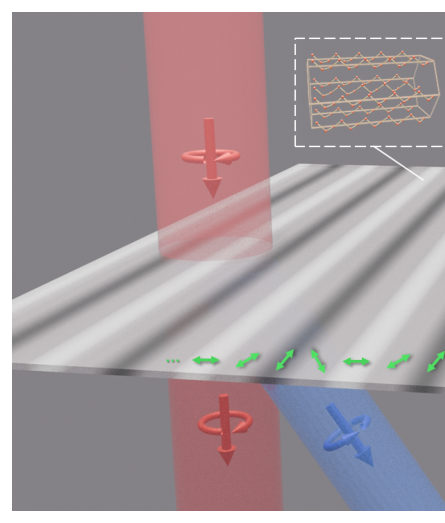
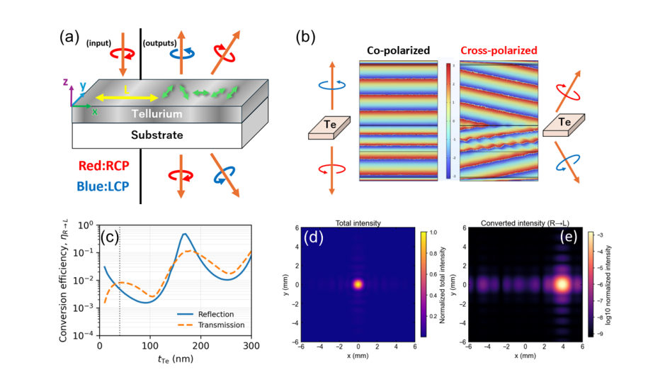
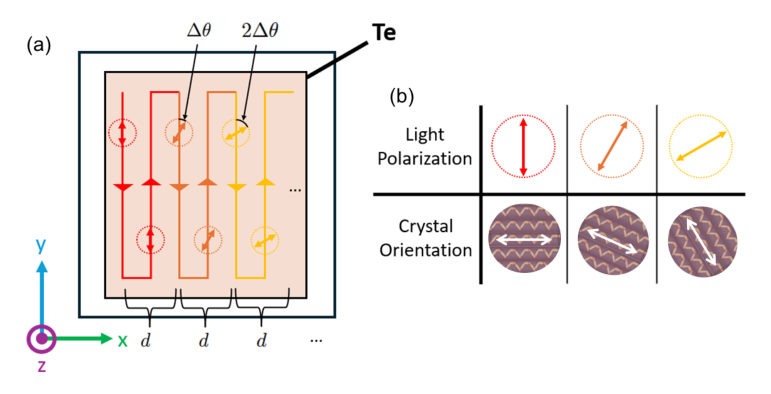

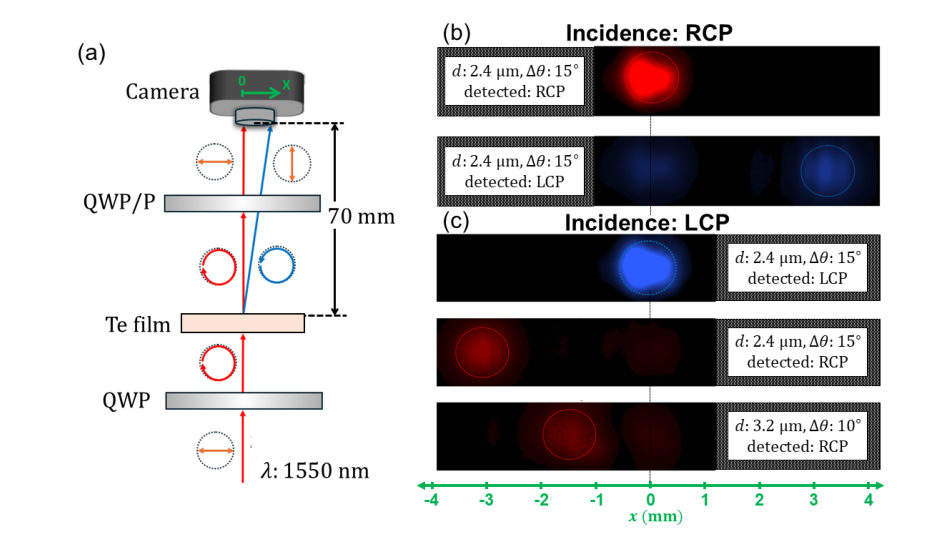
← Index · ← Previous · Next →
Authors: Peter Gschwandtner, Quirin Buchinger, Krishna Chand Maurya, Mohamed Helal, Barbara Souza Damasceno, Ravindra Kumar, Hyemin Kim, Ievgen Brytavskyi, Silke Kuhn, Arne Ludwig, Dirk Reuter, Yong-Hoon Cho, Tobias Huber-Loyola, Sven Höfling
Type: experiment · Category: quantum information and computing · PDF: https://arxiv.org/pdf/2607.11495v1
Analysis basis: full PDF text, analyzed in chunks
Topic relevance: 🔥 QC/QI experiment 4/5 · quantum optics experiment 3/5 · Tavis-Cummings & cavity-many-emitter 2/5 · correlated cavity matter 2/5 · analog quantum simulation 1/5 · interference shaping light 1/5 · quantum measurements 1/5 · spintronics-quantum-optics interface 1/5
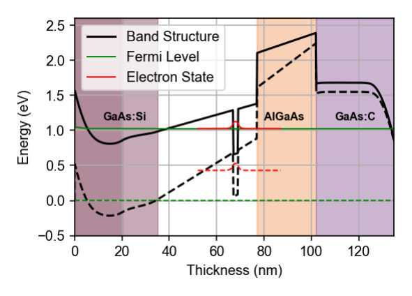
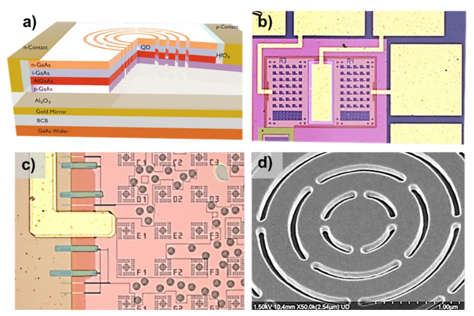
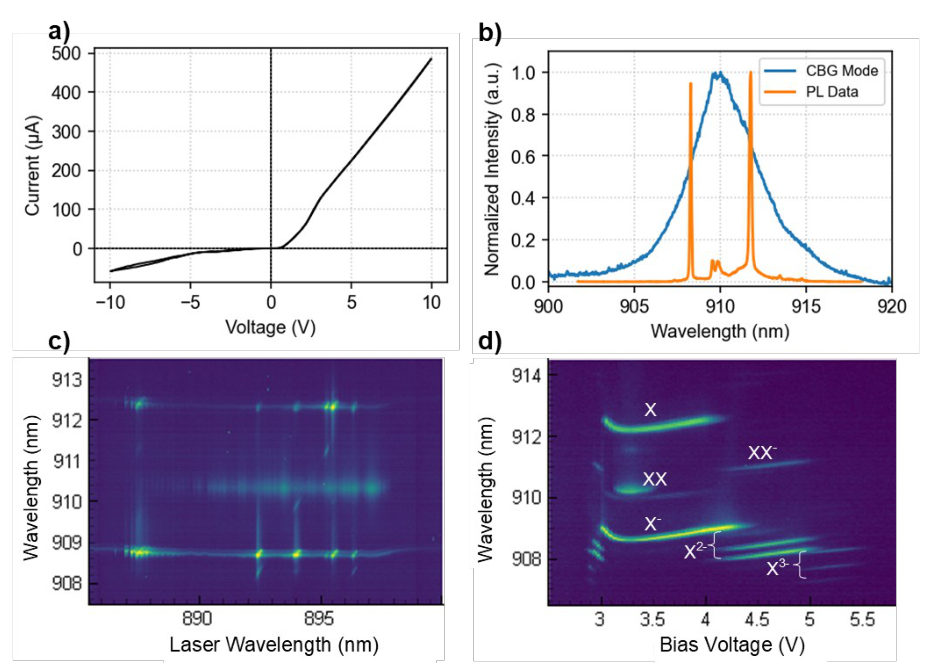
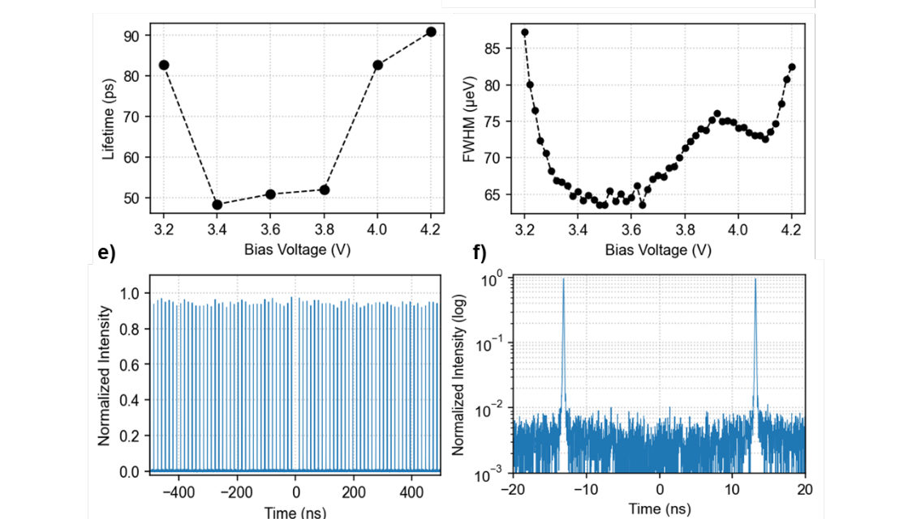
Summary. The paper reports on the creation of an advanced single-photon source using InAs quantum dots coupled to a custom circular Bragg grating resonator. By engineering the structure with labyrinthine bridges, the authors achieved electrical contact while maintaining high Purcell enhancement and photon extraction efficiency. The resulting device is shown to be blinking-free and allows precise tuning between multiple charge states, making it a strong candidate for next-generation quantum hardware.
Why it may be interesting. This work directly addresses hardware requirements for quantum networks by demonstrating high efficiency, deterministic control, and low multi-photon probability in a solid-state platform, which is highly relevant to photonic quantum information science.
Main problem. The development of efficient, deterministic, and tunable single-photon sources is crucial for realizing quantum communication and photonic quantum computing.
Main result. The authors demonstrated a robust architecture using InAs/GaAs QDs in a modified circular Bragg grating that achieves high photon extraction efficiency (68.1%) and blinking-free operation while allowing deterministic charge control ($ ext{X}^-$ to $ ext{X}^{3-}$).
Method. The research combines advanced semiconductor fabrication techniques with detailed optical characterization, including time-resolved photoluminescence and Hanbury Brown and Twiss measurements.
Model / system. The system utilizes InAs quantum dots embedded in a p-i-n doped GaAs membrane, coupled to a modified circular Bragg grating micro-resonator. The labyrinthine geometry was engineered to provide electrical contact while maintaining high Purcell enhancement.
Key observables. Single photon emission at 900 nm, Photon Extraction Efficiency (PEE $\approx 68\%$), low second-order autocorrelation ($g^{(2)}(0) < 0.017$), and distinct charge state plateaus ($ ext{X}^-, ext{X}^{3-}$).
Important parameters / regimes. Purcell factor ($\sim 18.0$), emission lifetime ($44.3 \pm 0.2$ ps), and operating voltage ranges for charge tuning.
Assumptions / limitations. The primary engineering challenge overcome was the electrical isolation of the central QD pillar within the CBG structure, which was solved using labyrinth-like bridges.
Figures summary. Figures detail PL vs. Voltage showing multiple charge plateaus; time-resolved PL confirms a significantly shortened lifetime compared to planar structures; and HBT measurements confirm strong photon antibunching ($g^{(2)}(0)$).
Paper structure. The paper progresses from establishing the need for high-performance sources, detailing the complex fabrication of the electrically contacted CBG structure, presenting optical characterization (PLV, lifetime), confirming single-photon purity via autocorrelation measurements, and concluding with the demonstration of charge tunability.
The development of efficient, deterministic, and tunable single-photon sources is a cornerstone for the realization of long-distance quantum communication, quantum repeaters, and photonic quantum computing technologies. In this study, we demonstrate a bright, charge-tunable single-photon source in the 900 nm wavelength range based on InAs quantum dots (QDs) embedded in a p-i-n doped GaAs membrane, which shows blinking free emission. We use a modified circular Bragg grating (CBG) as a micro-resonator. By adding fourfold symmetric bridges in a labyrinth-like geometry, we provide a conductive pathway to the central disk, thereby enabling electrical contact to the QD while maintaining high Purcell enhancement and photon extraction efficiency (PEE). For the negative trion (X-), we demonstrate a lifetime of $44.3 \pm 0.2$ ps - corresponding to a Purcell factor of $18.0 \pm 0.7$ and a PEE of $68.1% \pm 3.1$ %. Furthermore, the device is blinking-free with very low multi-photon contribution, evidenced by a second-order autocorrelation value $g(2)(0) < 0.017 \pm 0.015$. By applying a vertical diode bias, we demonstrate precise charge-state control, resolving distinct emission plateaus ranging from the single negatively charged trion ($X^-$) to triply negatively charged excitons ($X^{3-}$). These results showcase a robust architecture that simultaneously provides high efficiency, high repetition rates, and deterministic charge control, fulfilling key requirements for the next generation of quantum network hardware.
Authors: Chenhaoyue Wang, Amartya S. Banerjee
Type: theory · Category: statistical mechanics · PDF: https://arxiv.org/pdf/2607.11790v1
Analysis basis: full PDF text, analyzed in chunks
Topic relevance: analog quantum simulation 3/5 · driven-dissipative phase transition 3/5 · methods for driven-dissipative 3/5 · non-equilibrium dynamics 2/5 · non-equilibrium universality 2/5 · Frenkel-Kontorova 1/5 · Keldysh / 2PI / non-Gaussian methods 1/5
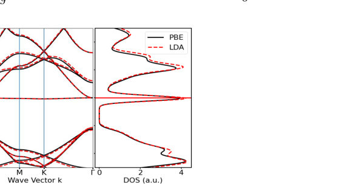
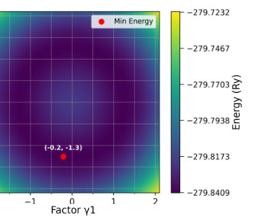
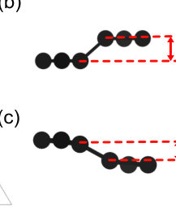
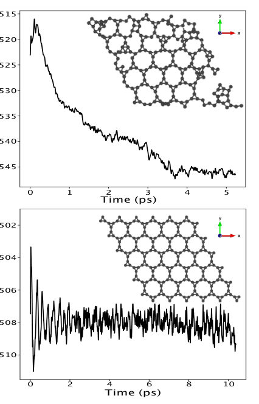
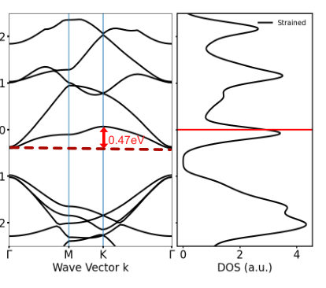
Summary. This work demonstrates that strain is a powerful tuning knob for the silicon kagome lattice ($ ext{SiKL}$), allowing researchers to engineer narrow electronic flat bands while simultaneously controlling its structural stability. By simulating both electronic structure and thermal dynamics, the authors map out a phase diagram where tensile strain dictates the transition pathway from crystalline order to amorphous disorder.
Why it may be interesting. The coupling of mechanical stress (strain) directly to both quantum electronic states (flat bands) and classical structural stability (phase transitions) provides a rich platform for studying emergent many-body physics under external control, relevant to open quantum systems modeling.
Main problem. The study investigates how mechanical strain can control both the electronic properties (achieving flat bands) and the structural stability (inducing crystalline-to-amorphous transitions) in a simple, elemental 2D material.
Main result. Biaxial tension significantly narrows the electronic bandwidth near the Fermi level and controls the amorphous transition pathway, leading to strain-induced metastability up to high temperatures.
Method. The research employs a combination of Density Functional Theory (DFT) for electronic structure, ab initio Molecular Dynamics (AIMD), and classical Molecular Dynamics (MD) simulations to model thermal and mechanical evolution.
Model / system. The system is the buckled silicon kagome lattice ($ ext{SiKL}$), an unfunctionalized six-atom monolayer. The study explores its response to external biaxial strain, which acts as the primary tuning parameter.
Key observables. Bandwidth ($W$), density-of-states peak near $E_F$, crystalline-to-amorphous transition temperature ($T_{CA}$), and structural order monitored via Radial Distribution Functions ($ ext{RDF}$).
Important parameters / regimes. Biaxial strain ($\epsilon$) up to 10%, Temperature ($T$) up to $\sim 600 ext{ K}$, and substrate mismatch (e.g., on $ ext{Ag}(111)$).
Assumptions / limitations. The transition temperature $T_{CA}$ is defined as a finite-time, model-dependent metric rather than an equilibrium thermodynamic melting point.
Figures summary. Figures illustrate the electronic band structure changes under strain, phonon dispersion curves showing instability/hardening, and potential energy histories tracking structural collapse pathways (gradual vs. abrupt).
Paper structure. The paper first establishes the planar lattice's inherent instability via soft phonons; it then models the relaxation into stable buckled forms; subsequently, it uses AIMD/MD to show strain-controlled electronic tuning and the resulting crystalline-to-amorphous phase transition kinetics.
Electronic flat bands in an elemental two-dimensional material provide an attractive setting for electron interactions competing with suppressed kinetic energy. Here we propose a buckled silicon kagome lattice (SiKL), an unfunctionalized six-atom monolayer of bond-linked Si$_3$ triangles and dodecagonal pores. Its planar parent hosts a dispersionless Kohn--Sham band near the Fermi level but is unstable to out-of-plane distortions. Following three soft zone-centre phonons and relaxing displaced structures yields two nearly degenerate buckled forms. The high-buckling form retains a partially flat kagome-derived band near the Fermi level. Biaxial tension controls lattice dynamics and electronic dispersion: at 10% strain, the bandwidth decreases significantly, the density-of-states peak approaches the Fermi level, and the softest phonon hardens. At 315 K, $6\times6$ ab initio MD shows the unstrained network disordering while the strained network remains ordered, indicating finite-temperature metastability. Fifty-nanosecond classical MD of $36\times36$ sheets reveals a strain-controlled crystalline--amorphous transition and local-bonding crossover near 2% strain. Low-strain trajectories show gradual, two-stage disordering; higher strains undergo an abrupt, first-order-like collapse, with the transition temperature reaching approximately 600 K at 10% strain. An exploratory Ag(111) substrate model suggests epitaxial mismatch could supply comparable tension, retain a narrow SiKL band, and preserve crystalline order above room temperature. Unlike passivated or hybrid-lattice silicon kagome proposals aimed mainly at conventional semiconductors, SiKL is elemental and uses strain alone to couple thermal metastability, bond rearrangement, and near-Fermi flat-band tuning. Buckled SiKL is a candidate platform for strain-controlled flat-band and electronic correlation physics.
Authors: H. Kachkachi, P. Thibaudeau
Type: theory · Category: other · PDF: https://arxiv.org/pdf/2607.11420v1
Analysis basis: full PDF text, analyzed in chunks
Topic relevance: Keldysh / 2PI / non-Gaussian methods 3/5 · methods for driven-dissipative 3/5 · spintronics-quantum-optics interface 3/5 · non-equilibrium dynamics 2/5 · correlated / nonlocal dissipation 1/5 · driven-dissipative phase transition 1/5 · exotic spin models in light-matter 1/5
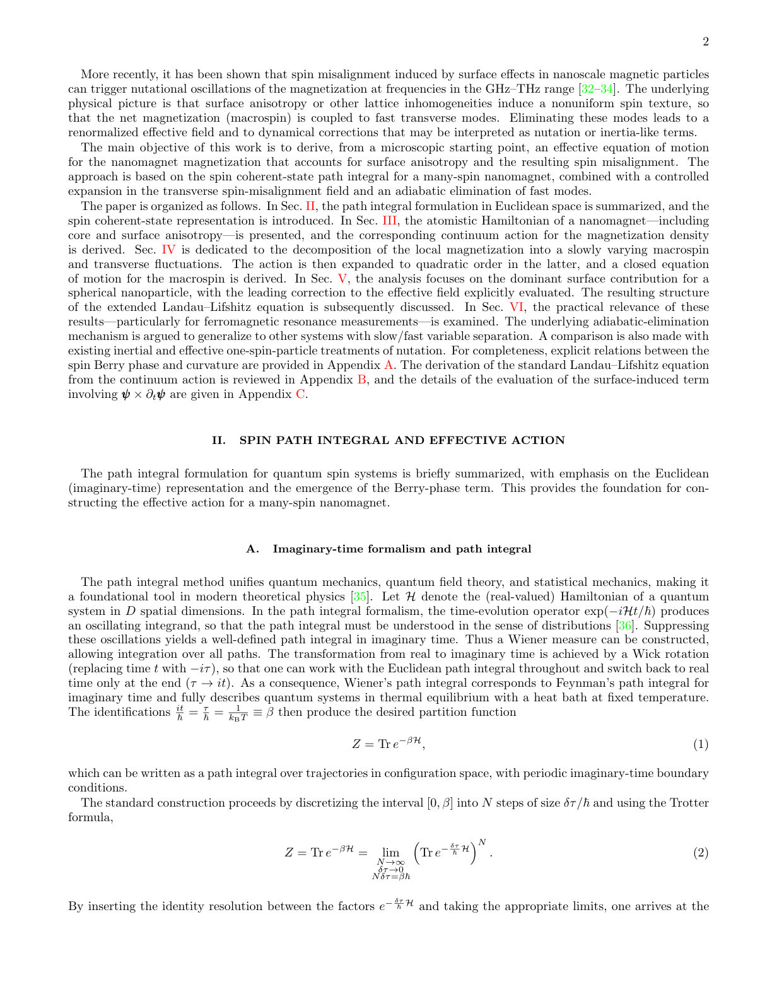
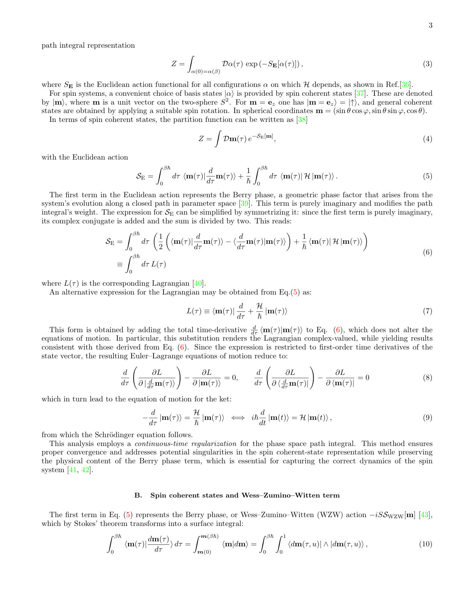
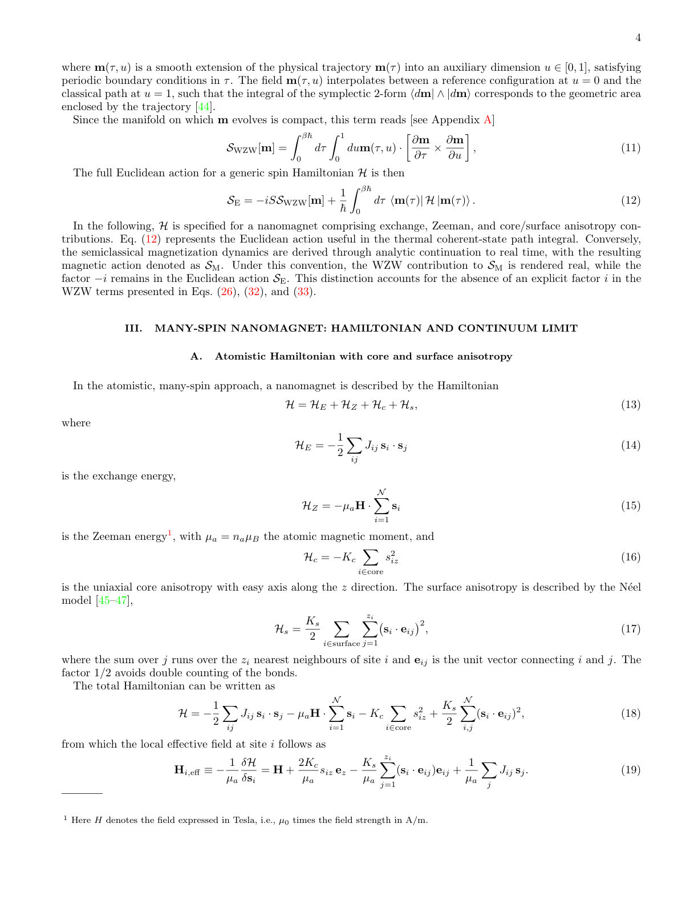
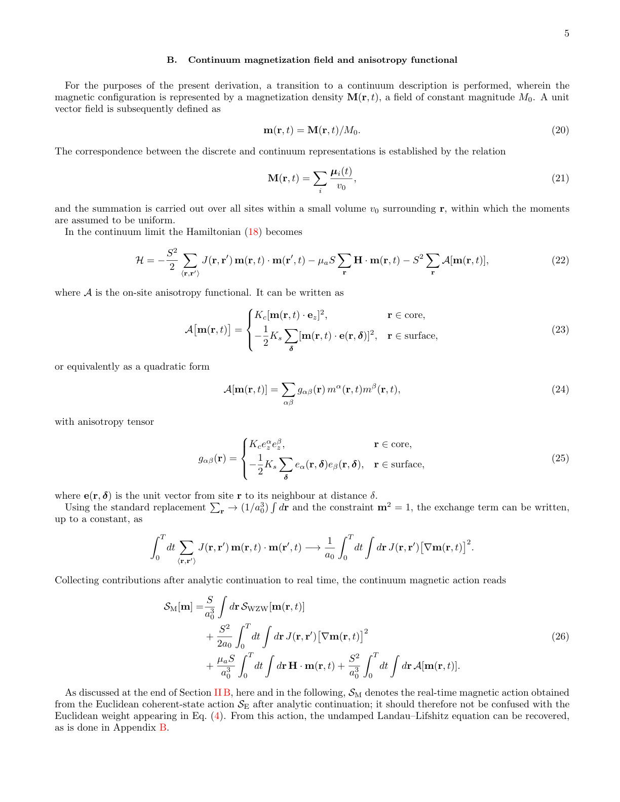
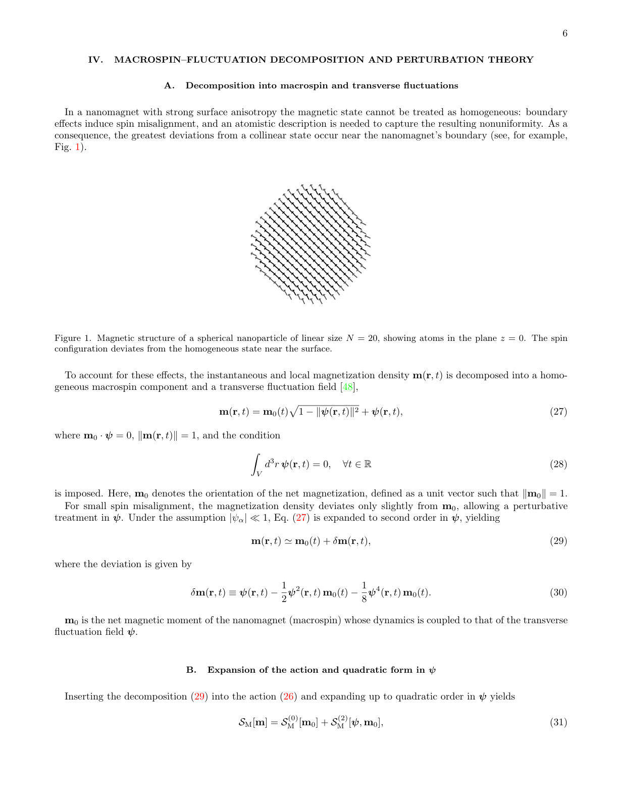
Summary. This paper derives an extended Landau-Lifshitz equation for nanomagnet magnetization by treating surface anisotropy effects using a path-integral formalism. By employing the adiabatic approximation to eliminate fast transverse spin fluctuations, the authors derive effective field corrections that predict measurable shifts in magnetic resonance frequencies due to intrinsic surface coupling.
Why it may be interesting. This work provides a rigorous quantum field theoretic derivation (path integral) of classical magnetic dynamics, which is highly relevant for understanding open quantum systems where coupling to environmental baths (fast fluctuations) modifies slow variables.
Main problem. To derive an effective, extended Landau-Lifshitz equation for nanomagnet magnetization that microscopically accounts for surface anisotropy effects leading to magnetization nutation.
Main result. The derivation yields a closed equation of motion featuring effective field corrections and additional nutation/damping terms originating from the adiabatic elimination of fast transverse spin-misalignment fluctuations.
Method. The approach uses the spin coherent-state path integral formalism in Euclidean space, followed by an adiabatic expansion to eliminate high-frequency modes.
Model / system. The system is a nanomagnet whose dynamics are governed by an atomistic spin Hamiltonian incorporating exchange, Zeeman, core, and surface anisotropy terms. The analysis transitions from the quantum path integral formulation to a classical effective equation of motion for the macrospin component.
Key observables. Effective field corrections ($\delta\mathbf{H}_{ ext{eff}}$), nutation-like contributions, damping-like contributions, ferromagnetic-resonance frequency shift, and linewidth.
Important parameters / regimes. Surface anisotropy strength, characteristic time scales separating slow macrospin evolution from fast transverse fluctuations.
Assumptions / limitations. The adiabatic approximation is central, assuming that transverse spin-misalignment modes relax much faster than the macroscopic magnetization component.
Paper structure. The paper systematically moves from defining the full Euclidean action via path integrals to decomposing the magnetization into slow and fast components. It then applies adiabatic elimination to derive the final, corrected Landau-Lifshitz equation for the macrospin.
An effective dynamical equation for the magnetization of a nanomagnet with surface anisotropy is derived from an atomistic spin Hamiltonian using the spin coherent-state path integral formalism. The derivation proceeds in two steps. First, the continuum Euclidean action for the many-spin nanomagnet is obtained, including the Wess--Zumino--Witten (Berry phase) term, as well as exchange, Zeeman, and core/surface anisotropy contributions. Second, the local magnetization density is decomposed into a slowly varying macrospin component and transverse spin-misalignment fluctuations driven by surface effects. A systematic expansion of the action is then performed up to quadratic order in the transverse-fluctuation variables. Under the adiabatic approximation, in which transverse modes relax much faster than the macrospin, these modes are eliminated by using their static Green's function solution. This results in a closed, extended Landau--Lifshitz equation for the macrospin, featuring an effective field with nontrivial corrections from spin misalignment. These corrections renormalize both the Zeeman and anisotropy fields and introduce additional terms that act as nutation- and damping-like contributions. ... Together, these results establish a microscopic foundation for surface-induced magnetization nutation in nanomagnets and provide a framework to estimate corrections to the precession frequency and effective damping. The corresponding shift in the ferromagnetic-resonance frequency and linewidth is measurable with standard GHz spectrometers, and the underlying adiabatic-elimination mechanism is expected to generalize to any slow magnetic variable coupled to a bath of fast-fluctuating modes.
Authors: Long Zhang, Xinfeng Chen, Hongfei Liang, Jianting Dong, Fei Zou, Yi Yan, Guangqian Ding, Guoying Gao
Type: both · Category: statistical mechanics · PDF: https://arxiv.org/pdf/2607.11222v1
Analysis basis: full PDF text, analyzed in chunks
Topic relevance: Keldysh / 2PI / non-Gaussian methods 3/5 · spintronics-quantum-optics interface 3/5 · methods for driven-dissipative 2/5 · non-equilibrium dynamics 2/5 · driven-dissipative phase transition 1/5 · exotic spin models in light-matter 1/5 · non-equilibrium universality 1/5
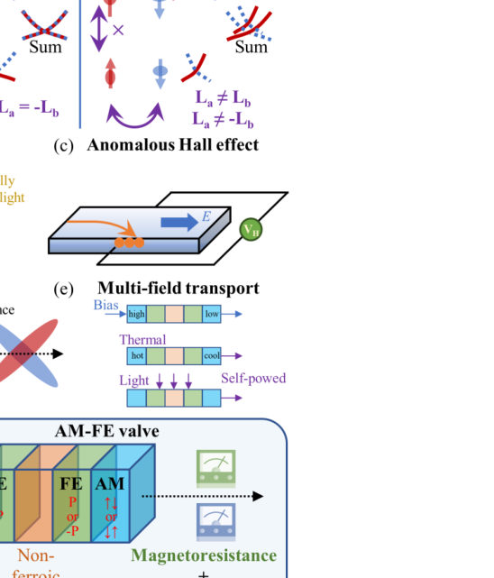
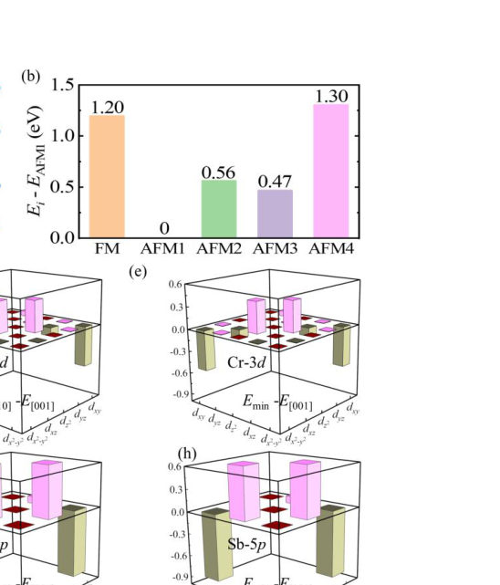
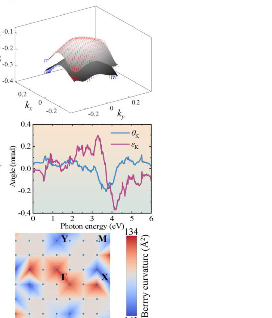
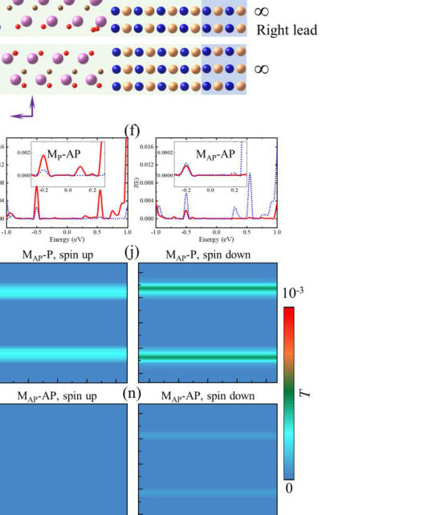
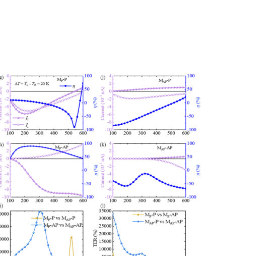
Summary. This work proposes utilizing ferrialtermagnetism, realized in $ ext{CrSb}$ flakes, to build a highly functional spintronic valve. By integrating this material with ferroelectrics, the authors predict record-high switching ratios ($\sim 10^4\%$) for TMR and TER under bias or light fields. The methodology combines advanced DFT calculations with non-equilibrium transport modeling.
Why it may be interesting. The combination of advanced magnetism concepts (altermagnets) with ferroelectricity and transport physics makes it relevant for understanding coupled order parameters and emergent quantum phenomena in solid-state devices.
Main problem. To establish ferrialtermagnetism (FiAM) as a robust, distinct subclass of altermagnets for developing multi-field-controlled spintronic and electronic devices.
Main result. The proposed $ ext{CrSb}/ ext{Sc}_2 ext{CO}_2/ ext{Cu}/ ext{Sc}_2 ext{CO}_2/ ext{CrSb}$ valve exhibits extremely high switching ratios ($\sim 10^4\%$) in TMR/TER, and demonstrates robust spin splitting even when Néel vectors are reversed.
Method. The study combines Density Functional Theory (DFT) calculations with Non-equilibrium Green's Function (NEGF) simulations to predict transport properties under various external fields (bias, light).
Model / system. The physical system is a multilayer heterostructure involving $ ext{CrSb}$ flakes exhibiting the FiAM state, coupled with ferroelectric ($ ext{Sc}_2 ext{CO}_2$) and metallic spacer layers. The magnetic behavior is modeled using spin Heisenberg Hamiltonians.
Key observables. Tunneling Magnetoresistance (TMR), Tunnel Electroresistance (TER), Anomalous Hall Conductivity (AHC), Negative Differential Resistance (NDR), and photocurrent extinction ratio.
Important parameters / regimes. Spin splitting energy of $344 ext{ meV}$, high Néel temperature ($657 ext{ K}$), and switching ratios up to $\sim 10^4\%$.
Assumptions / limitations. The analysis relies on the assumption that uniaxial magnetic anisotropy is sufficient to stabilize 2D order, and transport calculations use NEGF formalism.
Figures summary. Figures illustrate symmetry operations for various magnetic states (FM, AFM, FiM), schematics of multi-field valves ($ ext{bias}$, thermal, light), spin-resolved transmission coefficients across the device structure, and energy dependence of current ratios.
Paper structure. The paper progresses from defining the theoretical concept of ferrialtermagnetism via symmetry analysis to calculating fundamental magnetic properties (spin splitting, $T_N$) using DFT/Heisenberg models, culminating in detailed NEGF simulations predicting high-performance device characteristics like TMR and electroresistance.
Altermagnets combine the zero-stray-field of antiferromagnets with the spin polarization of ferromagnets, showing great potential for spintronic applications. Here, we propose ferrialtermagnetism as a distinct subclass of altermagnetic family, where symmetry-inequivalent altermagnetic sublattices possess nonidentical Neel vectors, preventing mutual cancellation of alternating spin splitting and conferring intrinsic robustness against perturbations. This concept is realized in the three-atomic-layer CrSb (110) flakes, which exhibits spin splitting of 344 meV, moderate uniaxial magnetic anisotropy, and high Neel temperature of 657 K. The magneto-optical Kerr and the anomalous Hall effects are observed. Integrating this ferrialtermagnetic CrSb with ferroelectric Sc2CO2 and Cu spacer, we design an ferrialtermagnetic-ferroelectric valve. This device displays equilibrium tunneling magnetoresistance and electroresistance of ~10^3%, and non-equilibrium magnitudes under bias, thermal, or light field reaches ~10^4% with high spin filtering of 90%. The negative differential resistance and photogalvanic effects, and photocurrent extinction ratio of 283.8 are achieved. These findings establish ferrialtermagnetism as a fertile platform for multi-field-controlled, ultracompact, and self-powered spintronics and electronics.
Authors: Javier Osca, Sungguen Ryu, Rosa López, Llorenç Serra
Type: theory · Category: other · PDF: https://arxiv.org/pdf/2607.10665v1
Analysis basis: full PDF text, analyzed in chunks
Topic relevance: non-equilibrium dynamics 3/5 · driven-dissipative phase transition 2/5 · methods for driven-dissipative 2/5 · Keldysh / 2PI / non-Gaussian methods 1/5 · Kondo & dissipative impurity 1/5 · analog quantum simulation 1/5 · correlated / nonlocal dissipation 1/5 · non-equilibrium universality 1/5 · spintronics-quantum-optics interface 1/5
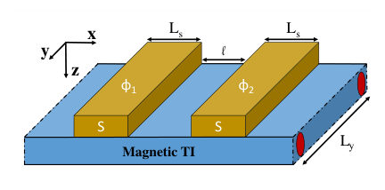
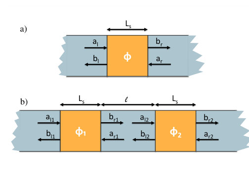
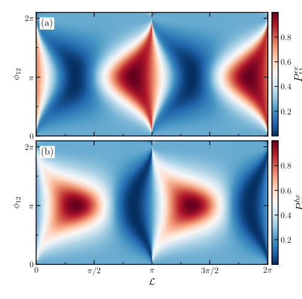
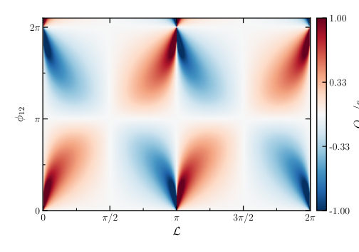
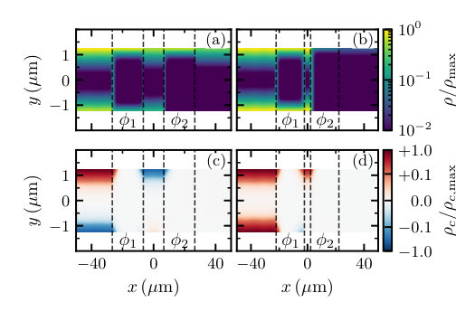
Summary. This work theoretically analyzes charge and heat transport in magnetic topological insulator nanoribbons coupled to multiple superconductors. By controlling the relative superconducting phases, researchers predict unique interference effects, including an AC Majorana effect and the ability to build a phase-controlled 'Majorana router' device. This highlights superconductivity phase control as a powerful tool for manipulating topological quantum channels.
Why it may be interesting. The explicit dependence on complex superconducting phases ($\phi$) to modulate quantum transport signatures like conductance blockade or AC oscillations provides a direct platform for engineering topological quantum states using external electromagnetic control (voltage bias).
Main problem. The study investigates how superconducting phase differences control charge and heat transport through magnetic topological insulator nanoribbons containing multiple proximitized superconducting sectors.
Main result. The system exhibits phenomena like an AC Majorana effect (time-dependent conductance oscillations) and the ability to function as a tunable, phase-controlled Majorana router in three-terminal junctions.
Method. The analysis employs analytical scattering matrix techniques combined with numerical diagonalization of the Hamiltonian across different superconducting/normal regions.
Model / system. The physical system is an MTI nanoribbon structured into two- and three-terminal devices, where superconductivity is induced via proximity coupling ($\Delta_{p,m}(x)$). The transport is mediated by chiral Majorana modes.
Key observables. Electrical conductance ($G$), thermal conductance ($K$), and time-dependent conductance oscillations (AC effect).
Important parameters / regimes. Superconducting phase differences ($\phi_{12}, \phi_{13}, \phi_{23}$), separation lengths ($\ell$), and segment lengths ($L_s$).
Assumptions / limitations. The analysis focuses on the regime mediated by a single chiral Majorana mode, and numerical methods are applied even for short superconducting segments.
Figures summary. Figures illustrate schematics of two-terminal (NSN/NSNSN) and three-terminal junctions. Plots show conductance ($G$) and thermal conductance ($K$) dependence on phase differences ($\phi_{12}$) and separation lengths ($\ell$), demonstrating blockade and interference effects.
Paper structure. The paper progresses from establishing the role of superconducting phases in MTI transport, deriving scattering relations for two-terminal junctions (NSN), analyzing charge mediation, and culminating in a detailed study of phase control in three-terminal 'Majorana router' configurations.
Transport in devices with multiple proximitized sectors depends heavily on the complex phases of the pairing gaps of those sectors. We investigate magnetic topological insulator nanoribbons in two- and three-terminal setups with proximitized sectors and asymptotic normal leads. Our focus is on the regime of single chiral Majoranas. The characteristic electric and thermal interferometries of chiral Majoranas can be controlled by the complex phases of the pairing. We predict an AC Majorana effect, in which phase dynamics induced by a voltage bias generate measurable time-dependent conductance oscillations. A three-terminal junction with superconducting islands can be used as a Majorana router when the relative complex phases are configured.
Authors: Narumi Fujii, Martin Moriamé, Maxime Lucas, Hiroya Nakao, Timoteo Carletti
Type: theory · Category: statistical mechanics · PDF: https://arxiv.org/pdf/2607.10759v1
Analysis basis: full PDF text, analyzed in chunks
Topic relevance: Keldysh / 2PI / non-Gaussian methods 3/5 · analog quantum simulation 2/5 · non-equilibrium dynamics 2/5 · correlated / nonlocal dissipation 1/5 · driven-dissipative phase transition 1/5 · methods for driven-dissipative 1/5 · non-equilibrium universality 1/5 · quantum measurements 1/5
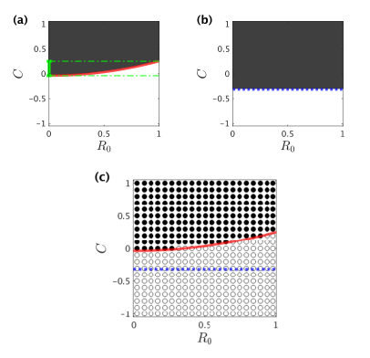
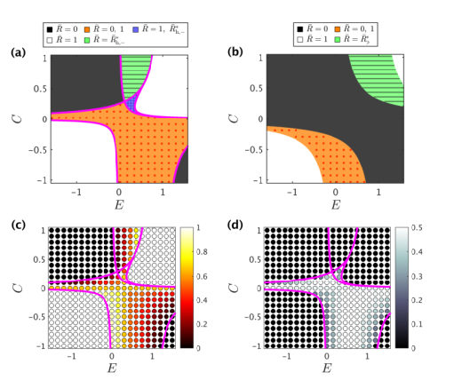
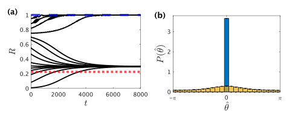
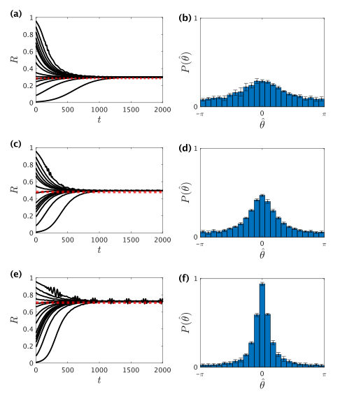
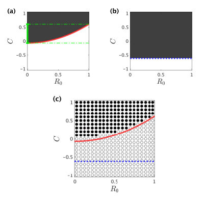
Summary. This paper tackles controlling synchronization in a time-delayed Kuramoto model by replacing the delay with an equivalent, higher-order interaction term. Using advanced mathematical techniques like the Ott–Antonsen ansatz and second-order averaging, they derive a simplified ODE that accurately predicts complex behaviors like bistability, outperforming simpler approximations.
Why it may be interesting. While focused on classical oscillators, the mathematical techniques—such as deriving effective dynamics from complex time-delayed systems using systematic approximation methods (like averaging)—are highly relevant to modeling open quantum systems or many-body dynamics where memory effects or non-Markovian noise are present.
Main problem. To develop a delay-free control framework for managing the collective synchronization dynamics of the time-delayed Kuramoto model.
Main result. The higher-order approximation accurately predicts system dynamics, enabling the realization and tuning of bistability and intermediate synchronization states via mean-field feedback control.
Method. The authors use perturbation theory combined with the Ott–Antonsen ansatz and second-order averaging methods to reduce the infinite-dimensional delay differential equation into a manageable one-dimensional ODE for the order parameter.
Model / system. The system is the globally coupled time-delayed Kuramoto model, which describes $N$ phase oscillators interacting with time delays. The analysis focuses on deriving an effective, higher-order approximation of these delayed interactions.
Key observables. Order parameter $z(t) = R(t)e^{i\Psi(t)}$, where $R$ is the degree of synchronization and $\Psi$ is the collective phase.
Important parameters / regimes. The small coupling strength ($\epsilon$) and the time delay ($ au$) are crucial parameters, with accuracy depending on the product $\epsilon au$.
Assumptions / limitations. The primary assumptions involve deriving a higher-order approximation valid for small $\epsilon au$, and applying the second-order averaging method to achieve $O(\epsilon^2)$ accuracy.
Figures summary. Figures compare stability diagrams and prediction errors between the higher-order approximation, the simpler pairwise approximation, and direct numerical simulations across different control inputs and delay strengths.
Paper structure. The paper progresses by first deriving the higher-order, delay-free approximation of the delayed Kuramoto model. It then applies the Ott–Antonsen ansatz and uses second-order averaging to obtain a reduced ODE for $R$. Finally, it analyzes this equation under various mean-field control inputs, comparing results against simpler approximations.
We propose a framework for controlling the collective dynamics of the time-delayed Kuramoto model based on a delay-free, higher-order approximation of the delayed interactions. By applying the Ott--Antonsen ansatz and the second-order averaging method to the resulting higher-order Kuramoto model, we obtain a one-dimensional reduced equation for the order parameter dynamics. Numerical simulations demonstrate that the higher-order approximation predicts the dynamics of the original delayed system more accurately than the conventional pairwise approximation and enables the realization of bistability and intermediate synchronization states. Our results demonstrate the effectiveness of higher-order interpretations of time delays for the control of oscillator networks with time-delayed interactions.
Authors: Takuto Hiraoka, Mizuho Matoba, Yuta Kobayashi, Arata Mitsuzuka, Masashi Kawaguchi, Haruyuki Sakurai, Kuniaki Konishi, Masamitsu Hayashi
Type: both · Category: other · PDF: https://arxiv.org/pdf/2607.11265v1
Analysis basis: full PDF text, analyzed in chunks
Topic relevance: interference shaping light 3/5 · quantum optics experiment 3/5 · driven-dissipative phase transition 2/5 · analog quantum simulation 1/5 · methods for driven-dissipative 1/5 · non-equilibrium dynamics 1/5 · spintronics-quantum-optics interface 1/5




Summary. The research presents a novel, lithography-free method to create functional metasurfaces using Tellurium (Te) by writing the crystal anisotropy with laser pulses. By controlling the local optical axis orientation, they demonstrate beam splitting and deflection based on light's circular polarization state. This approach establishes Te as a promising platform for reconfigurable flat-optics devices.
Why it may be interesting. This work is highly relevant to quantum optics and open quantum systems because metasurfaces are key components for controlling light polarization and momentum transfer. The ability to dynamically write these structures opens pathways for reconfigurable quantum optical elements without complex nanofabrication.
Main problem. The goal is to develop a lithography-free, reconfigurable platform for metasurfaces by locally controlling optical anisotropy in Tellurium (Te). This allows for dynamic control over light manipulation functions.
Main result. The authors successfully demonstrated a Te metasurface beam splitter whose optical response matches theoretical predictions by writing the crystal axis orientation using laser pulses. This proves that local programming of anisotropy enables reconfigurable flat-optics devices.
Method. Theoretical modeling uses Jones matrices and the Pancharatnam-Berry (PB) phase to predict beam steering based on spatially varying optic axes. Experimentally, a picosecond laser is used to write these anisotropic patterns onto Te films.
Model / system. The physical system is a Tellurium (Te) thin film exhibiting strong uniaxial anisotropy. The model incorporates the dependence of optical response on the local crystallographic $c$ axis orientation ($ heta$), which dictates the induced PB phase $\Phi_{PB} = \mp 2 heta$.
Key observables. Beam-deflection efficiency ($\eta$), far-field intensity profiles, and polarization components (co-circularly vs. cross-circularly polarized light).
Important parameters / regimes. Laser wavelength (1030 nm for writing), probe wavelength (1550 nm), Te film thickness (e.g., 40 nm), and the spatial variation of the optic axis $ heta(x)$.
Assumptions / limitations. The far-field calculation relies on the Fraunhofer approximation, and the model assumes a continuous rotation of $ heta(x)$ for theoretical derivation.
Figures summary. Figures illustrate the schematic setup (Fig. 1), simulation results showing helicity-dependent beam separation (Fig. 2a/b), calculated efficiencies vs. thickness (Fig. 2c), and resulting far-field intensity profiles (Figs. 2d/e).
Paper structure. The paper progresses from theoretical modeling of the PB phase and beam steering using Jones matrices, to detailed simulations confirming helicity-dependent deflection, culminating in experimental validation using laser-written Te films.
Laser-programmable optical anisotropy offers a new route to developing reconfigurable metasurfaces without conventional nanofabrication processes. Here, we demonstrate a lithography-free approach based on spatial control of the crystallographic $c$ axis orientation in tellurium (Te) using pulse laser irradiation. As a proof of concept, we demonstrate a Te metasurface beam splitter by laser-written optical-axis patterning and experimentally confirm that its optical response is in good agreement with theoretical predictions and numerical simulations. By directly programming the local optical anisotropy, this method enables a simple fabrication process while offering the possibility of rewriting and dynamically reconfiguring device functionality. These features make this approach a promising platform for non-resonant active metasurfaces and other reconfigurable flat-optics applications.
Authors: Raseeb F. Haroon, Paweł Machnikowski
Type: theory · Category: other · PDF: https://arxiv.org/pdf/2607.11479v1
Analysis basis: full PDF text, analyzed in chunks
Topic relevance: exotic spin models in light-matter 3/5 · methods for driven-dissipative 3/5 · spintronics-quantum-optics interface 3/5 · Keldysh / 2PI / non-Gaussian methods 1/5 · correlated / nonlocal dissipation 1/5 · driven-dissipative phase transition 1/5
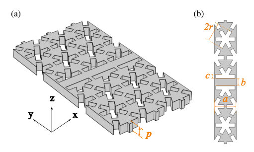
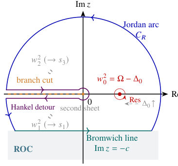
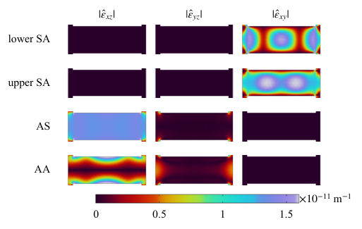
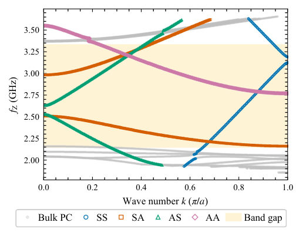
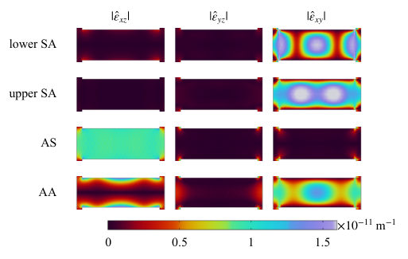
Summary. This paper develops advanced open quantum system theories to predict how electron spin relaxation occurs in semiconductor Quantum Dots embedded within phononic crystal waveguides. By incorporating the structured nature of the phonon reservoir, the authors show that coherence can be either drastically enhanced or suppressed by engineering the material's vibrational spectrum. This offers crucial design principles for solid-state quantum devices.
Why it may be interesting. This work is highly relevant as it provides a detailed theoretical framework for controlling quantum coherence (spin) using engineered mechanical environments (phononic band gaps), which is central to solid-state quantum information processing.
Main problem. The paper develops a comprehensive theory for electron spin relaxation induced by phonons when the coupling occurs within a structured phononic reservoir.
Main result. Spin relaxation is highly sensitive to the structure, showing potential suppression by orders of magnitude due to band gaps or exhibiting universal power-law decay near van Hove singularities.
Method. The theory combines open quantum system approaches (Markovian and non-Markovian) with finite-element simulations to model spin-phonon coupling in structured waveguides.
Model / system. The system models an electron spin confined in a Quantum Dot embedded within a phononic crystal waveguide. The dynamics are governed by the spin-phonon Hamiltonian, analyzed using master equations derived from quantized elastic and piezoelectric interactions.
Key observables. Spin relaxation rate ($\Gamma$ or $\gamma_\downarrow$), survival probability, and population plateau ($P(\infty)$).
Important parameters / regimes. Phonon density of states (PDOS) modulation, magnetic field strength/orientation, detuning ($\Delta_0$), and structural parameters defining the phononic band gap.
Assumptions / limitations. The analysis transitions between Born-Markov approximations (valid away from singularities) and non-Markovian descriptions (required near van Hove singularities or band edges).
Figures summary. FIG. 1 schematically illustrates the W1m GaAs phononic crystal waveguide structure; TABLE I lists material parameters for GaAs.
Paper structure. The paper progresses by first establishing the physical model and using finite-element methods to calculate eigenmodes, then deriving the spin-phonon Hamiltonian in quantized form, applying Born-Markov theory, and finally extending the analysis into the non-Markovian regime near spectral singularities ($\Delta_0 < 0$).
By combining Markovian and non-Markovian open quantum system theory with finite-element simulations, we develop a theory of electron spin relaxation in a structured phononic reservoir. This problem is crucial for understanding spin dynamics in hybrid systems involving mechanical modes, as well as for the design of devices combining spin degrees of freedom with photonic and phononic architectures, where the phonon density of states is modulated in the relevant spectral range corresponding to moderate magnetic fields. Taking a QD in a phononic waveguide as a representative and technologically relevant example, we show that spin relaxation in such environments is much more complex than in bulk. While the relaxation rates are typically an order of magnitude higher than in bulk, there are parameter windows where the relaxation is suppressed by many orders of magnitude due to gaps in mode dispersion and selection rules imposed by mode symmetry. At the border between these two sectors, van Hove singularities in phonon dispersion lead to singularities in relaxation rates, for which we develop power-law scaling and propose a non-Markovian description of the dynamics, revealing polaronic dressing of the spin into slow acoustic modes.
Authors: Tian-Yi Zhang, Peng-Yi Liu, Yu-Fei Sun, Ai-Min Guo, Qing-Feng Sun
Type: theory · Category: other · PDF: https://arxiv.org/pdf/2607.11788v1
Analysis basis: full PDF text, analyzed in chunks
Topic relevance: Keldysh / 2PI / non-Gaussian methods 3/5 · Kondo & dissipative impurity 2/5 · methods for driven-dissipative 2/5 · non-equilibrium dynamics 2/5 · driven-dissipative phase transition 1/5 · exotic spin models in light-matter 1/5 · spintronics-quantum-optics interface 1/5
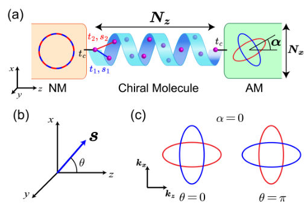
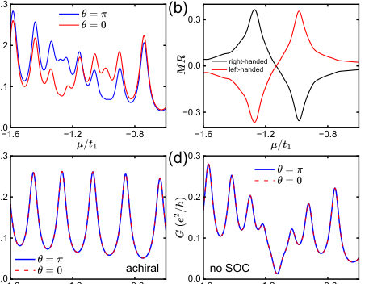
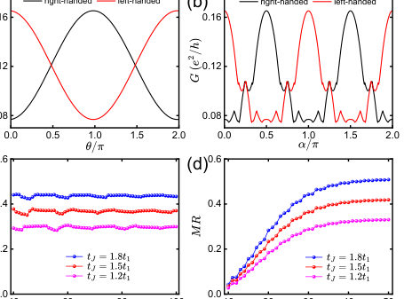
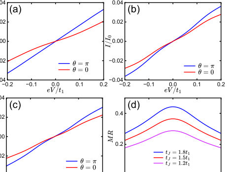
Summary. The paper theoretically investigates a novel spintronic device—a spin valve built from a normal metal, a chiral molecule, and an altermagnet. By calculating the conductance and magnetoresistance using Green's functions, the authors demonstrate that chirality and the AM's unique magnetic properties synergistically enhance the MR effect. This paves the way for building controllable, stray-field-free spintronic devices.
Why it may be interesting. This work connects molecular electronics (CISS effect) with advanced magnetic materials (Altermagnets) to engineer spin transport phenomena using purely theoretical quantum transport methods, which is highly relevant for understanding open quantum systems dynamics in condensed matter.
Main problem. The research aims to develop highly efficient and tunable spin valves by integrating chiral molecules with altermagnetic (AM) materials, aiming to surpass limitations of conventional ferromagnetic spin valves.
Main result. The theoretical model predicts that the magnetoresistance (MR) is significantly enhanced by combining chirality-induced spin selectivity (CISS) in the molecule with the momentum-dependent spin splitting inherent to the AM electrode. This MR increases with molecular length and AM anisotropy.
Method. The study employs non-equilibrium Green's function methods combined with the Landauer-Büttiker formula to calculate transport properties across the junction.
Model / system. The physical system modeled is a Normal Metal/Chiral Molecule/Altermagnet (NM/chiral molecule/AM) spin valve. The Hamiltonian incorporates terms for the AM, NM, chiral molecule (single-helical model), and coupling interactions.
Key observables. Conductance ($G$) and Magnetoresistance ($ ext{MR}$), which are calculated as a function of external parameters like Néel vector orientation ($ heta$) and molecular length ($N_z$).
Important parameters / regimes. Chiral molecule twist angle ($\Delta\varphi$), AM anisotropy, dephasing strength ($\Gamma_d$), and the relative alignment of the AM's Néel vector ($ heta$).
Assumptions / limitations. The model includes a dephasing term ($H_d$) to account for real-world scattering effects, and it assumes the CISS effect is active due to molecular chirality.
Figures summary. Figures illustrate schematics of the junction structure, show Fermi surfaces in the AM depending on spin and orientation ($ heta$), and plot conductance/MR dependence on $ heta$, $\alpha$, and molecule length ($N_z$).
Paper structure. The paper establishes the physical model (Hamiltonian), details the theoretical methodology (NEGF/Landauer-Büttiker), presents results showing how MR arises from the interplay of chirality and AM properties, and concludes by discussing device potential.
Chiral molecules have attracted broad interdisciplinary interest for their ability to produce highly spin-polarized current. This phenomenon, known as the chiral-induced spin selectivity effect, holds great potential in the field of spintronics. Here, we propose to combine chiral molecules with altermagnets to construct highly efficient and tunable spin valves. Using the nonequilibrium Green's function method and the Landauer-Büttiker formula, we obtain the conductance and the magnetoresistance of a normal metal/chiral molecule/altermagnet spin valve. Our theoretical results reveal that the conductance of the spin valve can be effectively tuned by reorienting the Néel vector of the altermagnet, and the magnetoresistance of the spin valve increases with molecular length and altermagnetic anisotropy. Moreover, the magnetoresistance vanishes for achiral molecules or in the absence of molecular spin-orbit coupling. Our work paves the way for developing efficient, controllable, and stray-field-free spintronic devices.
Authors: Hemant Verma, Tzu-Yu Peng, Shyr-Shyan Yeh, Sheng-Chieh Huang, Pritam Sardar, Yang-Hao Chan, Yu-Jung Lu, Chao-Cheng Kaun
Type: both · Category: other · PDF: https://arxiv.org/pdf/2607.11237v1
Analysis basis: full PDF text, analyzed in chunks
Topic relevance: non-equilibrium dynamics 3/5 · methods for driven-dissipative 2/5 · non-equilibrium universality 2/5 · Keldysh / 2PI / non-Gaussian methods 1/5 · analog quantum simulation 1/5 · correlated / nonlocal dissipation 1/5 · driven-dissipative phase transition 1/5
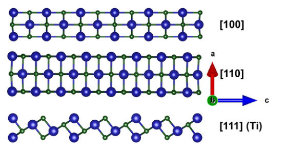
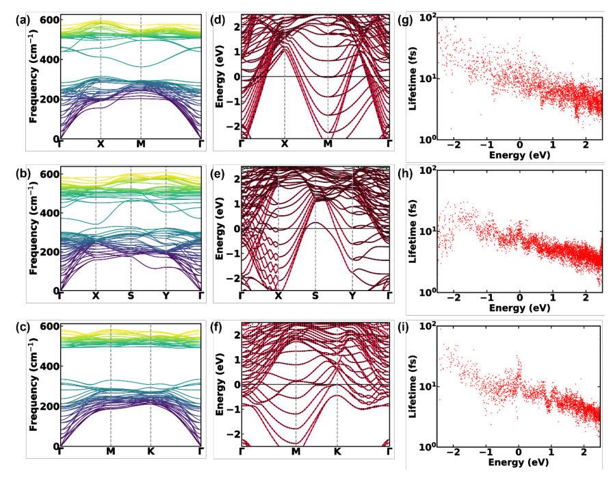
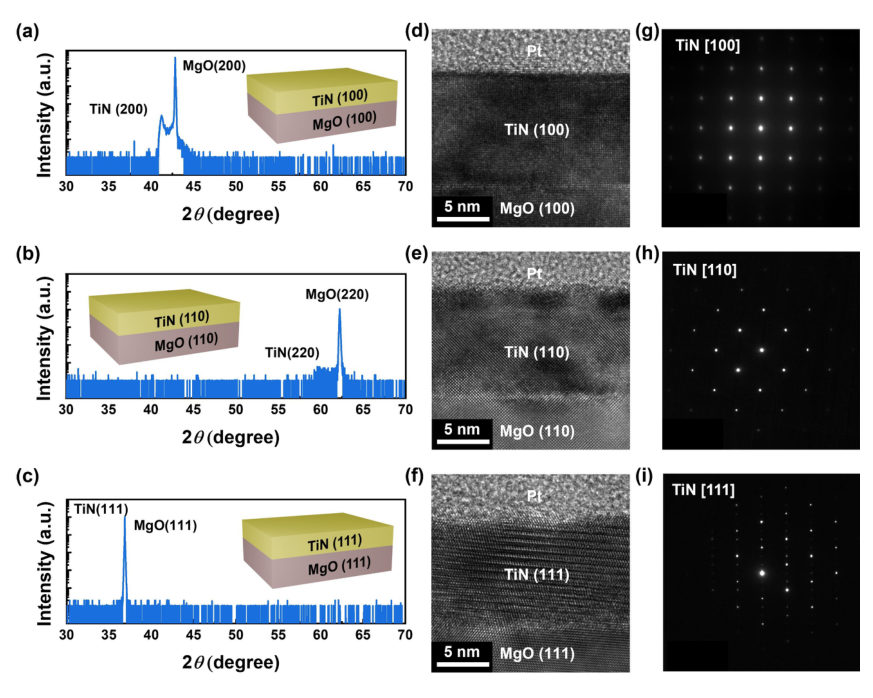
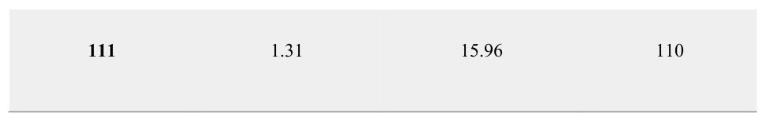
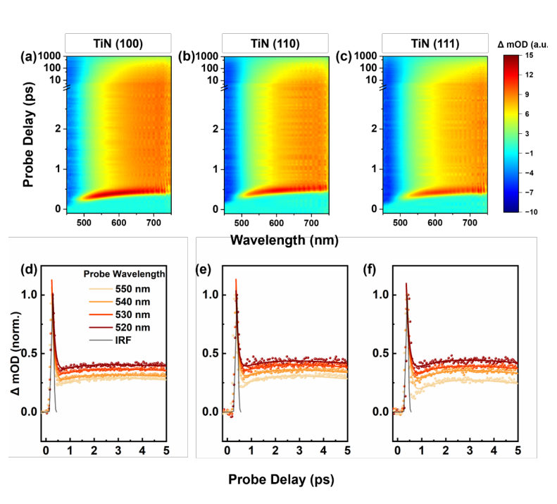
Summary. This work demonstrates that the crystal orientation of TiN thin films critically controls how fast hot carriers cool down via electron-phonon scattering. By combining first-principles theory and pump-probe measurements, the authors show that the [111] direction exhibits a significantly slower relaxation rate compared to other orientations. This finding provides crucial guidelines for engineering energy conversion devices using anisotropic materials.
Why it may be interesting. While focused on condensed matter physics (plasmonics/energy conversion), the study models non-equilibrium energy transport dynamics using ultrafast spectroscopy and quantum calculations, which shares methodological overlap with open quantum systems modeling of energy relaxation.
Main problem. The study investigates how crystallographic orientation dictates the rate of hot carrier energy relaxation mediated by electron-phonon (e-ph) scattering in TiN thin films.
Main result. Both theoretical calculations and ultrafast spectroscopy show that the [111] orientation leads to a slower decay/longer lifetime compared to the [100] and [110] directions, demonstrating strong crystallographic control over energy dissipation.
Method. The research combines first-principles DFT calculations using MLWFs (for theoretical scattering lifetimes) with ultrafast pump-probe transient absorption spectroscopy (TAS) measurements (for experimental cooling times).
Model / system. The system is quasi-epitaxial Titanium Nitride (TiN) thin films grown on MgO substrates, analyzed along the [100], [110], and [111] crystal axes.
Key observables. Electron-phonon scattering lifetime ($\tau_{\text{e-ph}}$) and population-level hot-electron cooling time ($\tau_{\text{cooling}}$).
Important parameters / regimes. Crystallographic orientation ([100], [110], [111]), temperature (room temperature), and characteristic timescales (few-fs to hundreds-of-fs).
Assumptions / limitations. The calculated lifetimes represent single-event scattering, while measured times reflect collective cooling dynamics; however, the trends are consistent.
Figures summary. Figures likely show optimized slab structures, electronic band diagrams, and time-resolved TAS kinetics plots comparing the three orientations.
Paper structure. The paper establishes the problem of anisotropic relaxation, presents theoretical calculations based on first principles to predict scattering rates for different crystal faces, validates these predictions against experimental TAS measurements, and concludes by emphasizing orientation control as a design tool.
Crystal orientations can shape the ultrafast energy relaxations of transition-metal nitride thin films. Here, we investigate the orientation-dependent electron-phonon (e-ph) mediated relaxation in titanium nitride (TiN) thin films along the [100], [110], and [111] directions by combining first-principles calculations with ultrafast pump-probe transient absorption spectroscopy. Using maximally localized Wannier functions, we evaluate e-ph quasiparticle scattering lifetimes near the Fermi level and identify a clear anisotropy: The TiN [111] orientation exhibits a longer e-ph scattering lifetime (15.96 fs) than [100] (13.69 fs) and [110] (11.12 fs), indicating reduced intrinsic e-ph scattering strength. Furthermore, we grew quasi-epitaxial, orientation-controlled TiN thin films on MgO substrates. Pump-probe measurements reveals that the population-level relaxation (hot-electron cooling) time also depends on orientations, with [111] films showing a significantly slower decay (110 fs) than [100] (90 fs) and [110] (80 fs). We emphasize that the calculated few-femtosecond scattering lifetimes and the measured few-hundred-femtosecond cooling time respectively represent single-event scattering and collective cooling, yet they exhibit consistent trends. These results demonstrate that crystallographic orientation provides a practical and powerful route to tune e-ph-governed relaxation in TiN thin films, offering essential design guidelines for refractory plasmonic and energy-conversion platforms.
Authors: Mikhail S. Kalenkov, Andrei D. Zaikin
Type: theory · Category: other · PDF: https://arxiv.org/pdf/2607.09859v1
Analysis basis: full PDF text, analyzed in chunks
Topic relevance: methods for driven-dissipative 3/5 · non-equilibrium dynamics 3/5 · non-equilibrium universality 2/5 · Keldysh / 2PI / non-Gaussian methods 1/5 · correlated / nonlocal dissipation 1/5 · driven-dissipative phase transition 1/5
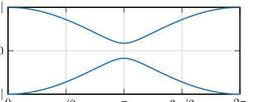
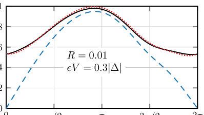
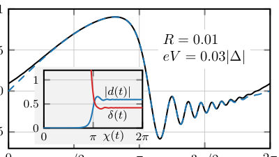
Summary. This paper develops a microscopic theory to analyze the supercurrent in superconducting nanojunctions under external voltage bias. The key finding is that quantum interference between Andreev states causes measurable, coherent oscillations in the supercurrent near specific phase biases. This advances understanding of non-equilibrium quantum transport beyond standard tunneling models.
Why it may be interesting. This work provides a detailed theoretical framework for non-equilibrium quantum transport in superconducting mesoscopic devices, directly relevant to understanding energy dissipation and coherent dynamics in superconducting qubits or Josephson junction circuits.
Main problem. The study investigates quantum interference effects on the supercurrent flowing through superconducting nanojunctions when driven out of equilibrium by an external voltage bias.
Main result. The authors predict pronounced coherent oscillations in the supercurrent, arising from quantum interference between Andreev states following Landau-Zener tunneling, which are absent in simpler theoretical models.
Method. The analysis involves deriving an effective Hamiltonian and solving a Schrödinger-like equation for Andreev states, utilizing concepts from Landau-Zener theory and quasiclassical transport equations.
Model / system. The system is a superconducting nanojunction modeled with Andreev states. The dynamics are governed by an effective Hamiltonian derived microscopically, considering the junction's transmission parameter $D$ and external voltage bias $V$.
Key observables. Supercurrent $I(t)$ as a function of Josephson phase $\chi(t)$, and the coherent oscillation amplitude.
Important parameters / regimes. External voltage bias $V$, Josephson phase $\chi$, superconducting gap $\Delta$, and junction transmission parameter $D$.
Assumptions / limitations. The analysis relies on approximations such as the adiabatic limit far from anticrossings, and later incorporates corrections for sub-Ohmic dissipation to match numerical results.
Figures summary. Figures compare calculated supercurrent $I$ versus Josephson phase $\chi(t)$ at various bias voltages, demonstrating clear oscillations near the anticrossing point ($\pi < \chi < 2\pi$) and showing how adding dissipative terms restores agreement with exact numerical solutions.
Paper structure. The paper progresses from deriving an effective Hamiltonian for out-of-equilibrium Andreev states to calculating the current using a general expression. It then details the application of Landau-Zener theory near $\chi=\pi$, followed by extensions to include dissipation and finally analyzing the low-voltage limit using advanced mathematical techniques.
With the aid of a microscopic theory we derive an effective Hamiltonian that controls quantum dynamics of Andreev states in superconducting nanojunctions out of equilibrium. Resolving the corresponding Schrödinger-like equation we obtain the "wave functions" for Andreev levels and evaluate electric current across the junction in the presence of an external voltage bias. We demonstrate that quantum interference of Andreev states may yield pronounced coherent oscillations of the supercurrent as a function of the Josephson phase in junctions with barrier transmissions slightly below unity. Further implications of this novel effect are expected for junctions with diffusive barriers.
Authors: Zhouyi Yin, Zheng Shi, Shuxuan Zhang, Changchao Liu, Xingkai Cheng, Fayuan Zhang, Han-Bin Deng, Jia-Xin Yin, Chaoyu Chen, Guang-Han Cao, Junwei Liu, Yue Zhao
Type: experiment · Category: strongly correlated electrons · PDF: https://arxiv.org/pdf/2607.11567v1
Analysis basis: full PDF text, analyzed in chunks
Topic relevance: driven-dissipative phase transition 3/5 · non-equilibrium dynamics 2/5 · non-equilibrium universality 2/5 · Frenkel-Kontorova 1/5 · Keldysh / 2PI / non-Gaussian methods 1/5 · methods for driven-dissipative 1/5
Summary. This work reports on the discovery of a complex, hierarchical sequence of charge density wave instabilities in an altermagnet. Using advanced STM techniques, the authors mapped three coupled CDW components whose emergence is dictated by symmetry breaking. This cascade is successfully modeled using Landau theory, demonstrating how crystal symmetry organizes collective electronic order in correlated quantum materials.
Why it may be interesting. The concept of symmetry-driven electronic cascades provides a rich playground for understanding emergent many-body physics beyond simple band theory, relevant to correlated electron systems where multiple competing orders coexist.
Main problem. The study aims to determine how crystal symmetry dictates the emergence and hierarchy of collective electronic order, specifically charge density waves (CDWs), in altermagnetic materials.
Main result. The authors discovered a highly coordinated, multi-component cascade of CDW instabilities ($\mathcal{Q}_1 ightarrow \mathcal{Q}_2 ightarrow \mathcal{Q}_3$) whose sequence is governed by successive symmetry lowering and coupled to octupolar electronic states.
Method. Phase-resolved scanning tunneling microscopy (STM) and spectroscopy were used to map out multiple wave vectors ($\mathbf{q}$) and measure energy-dependent spectral weight redistribution across the cascade components.
Model / system. The system is a $d$-wave altermagnet, $ ext{Rb}_{1-\delta} ext{V}_2 ext{Te}_2 ext{O}$. The theoretical framework employs Landau theory to model the sequential condensation of charge orders coupled to octupolar partners.
Key observables. Three distinct modulations ($\mathbf{q}_1, \mathbf{q}_2, \mathbf{q}_3$), contrast-inversion energies at specific biases, and branch-selective spectral weight redistribution in $\mathcal{Q}_3$.
Important parameters / regimes. Doping level ($\delta$) and temperature ($T$); the relative wave vectors defining the cascade hierarchy.
Assumptions / limitations. The observed electronic order can be described by a sequential softening of charge orders within a Landau free energy functional, coupled to octupolar terms.
Figures summary. Figures illustrate the spatial mapping and FFT analysis revealing $\mathbf{q}_1, \mathbf{q}_2,$ and $\mathbf{q}_3$ modulations; spectroscopy shows bias-dependent spectral weight changes confirming intrinsic nature of $\mathcal{Q}_3$.
Paper structure. The paper progresses by first identifying the three distinct CDW components via STM mapping ($\mathbf{q}_1, \mathbf{q}_2, \mathbf{q}_3$), then using spectroscopy to prove their coupling and hierarchy, culminating in a Landau description of the entire cascade process.
Altermagnets host magnetic compensation together with non-relativistic spin-split bands, a coexistence enabled by crystal symmetry. Yet whether and how crystal symmetry organizes collective electronic order remains largely unexplored. Here we uncover a symmetry-driven cascade of finite-$q$ charge order in a $d$-wave altermagnet Rb$_{1-δ}$V$_2$Te$_2$O, using phase-resolved scanning tunneling microscopy. A primary density-wave instability drives an initial electronic reconstruction, followed by the emergence of a nematic component and an off-axis modulation with wave vectors geometrically tied to the preceding orders. Phase-resolved spectroscopy distinguishes these components through separate contrast-inversion energies and maps out branch-selective spectral-weight redistribution within the off-axis mode. Together with doping and temperature evolution, these observations establish a highly coordinated hierarchy of coupled density-wave instabilities, consistent with successive symmetry lowering. This multi-component hierarchy can be well described in the Landau framework through sequential softening of the charge orders, where bilinear coupling to their compatible octupolar partners at the lower-symmetry stages enables mutual stabilization within an intertwined charge-multipole state. Such a transparent realization of a charge-order cascade shows how altermagnetic symmetry can extend beyond band formation to organize collective electronic order, offering a new perspective on emergent many-body states in correlated quantum materials.
Authors: Morteza Salehi, Tohid Farajollahpour
Type: theory · Category: strongly correlated electrons · PDF: https://arxiv.org/pdf/2607.10757v1
Analysis basis: full PDF text, analyzed in chunks
Topic relevance: analog quantum simulation 3/5 · exotic spin models in light-matter 3/5 · spintronics-quantum-optics interface 3/5 · Keldysh / 2PI / non-Gaussian methods 1/5
Summary. This theoretical work analyzes the RKKY interaction in $p$-wave magnets with Rashba SOC, revealing how odd parity fundamentally alters magnetic exchange. Key findings include a decoupling of out-of-plane Ising terms and the emergence of tunable DM interactions. The paper provides crucial insights into engineering robust, directionally controlled non-collinear spin textures.
Why it may be interesting. The detailed analysis of spin texture engineering through symmetry breaking (parity/RSOC) is highly relevant to AMO physics and quantum optics, as these systems often involve engineered spin-orbit coupling or topological phases that dictate long-range interactions.
Main problem. The study investigates how the Ruderman-Kittel-Kasuya-Yosida (RKKY) indirect exchange interaction behaves in unconventional $p$-wave magnets when subjected to Rashba spin-orbit coupling.
Main result. The odd parity of the $p$-wave state causes a spatial decoupling of the out-of-plane Ising interaction, while the system generates a highly tunable, three-component Dzyaloshinskii-Moriya (DM) interaction. Furthermore, an anomalous crossover leads to a dimension-reducing $1/R$ decay for in-plane chiral components.
Method. The analysis employs an analytical real-space Green's function formalism and uses the stationary-phase approximation on momentum-space integrals to derive asymptotic expressions for the RKKY tensor components.
Model / system. The model is a two-dimensional ($2D$) unconventional $p$-wave magnet described by an effective continuum Hamiltonian incorporating kinetic energy, an odd-parity momentum-dependent exchange field ($M_p\mathbf{k}$), and Rashba spin-orbit coupling ($\lambda$).
Key observables. RKKY exchange tensor components (Heisenberg, Ising, Dzyaloshinskii-Moriya (DM) interaction), spatial decay laws ($1/R$ vs $1/R^2$), and directional tunability of magnetic interactions.
Important parameters / regimes. Rashba coupling strength ($\lambda$), Fermi wavevector ($k_F$), and the momentum shift associated with the $p$-wave order.
Assumptions / limitations. The calculations rely on long-distance asymptotic expressions for the Green's functions ($k_F R \gg 1$) and utilize an effective two-band continuum Hamiltonian.
Figures summary. Figures schematically illustrate RKKY interactions in $p$-wave magnets, showing constant-energy contours that reveal spin-splitting effects when RSOC is present. Later figures track the spatial dependence of various RKKY tensor components as a function of polarization angle.
Paper structure. The paper progresses from defining the physical model and Hamiltonian to deriving the Green's functions using matrix inversion, then calculating the full RKKY exchange tensor via second-order perturbation theory in real space. The focus shifts to analyzing parity effects, decoupling mechanisms, and finally deriving closed-form asymptotic expressions for all interaction components.
Unconventional $p$-wave magnets, characterized by an odd-parity momentum-dependent spin splitting, offer a fundamentally distinct paradigm for non-collinear spintronics. Here, we theoretically investigate the Ruderman-Kittel-Kasuya-Yosida indirect exchange in a two-dimensional $p$-wave magnet subjected to Rashba spin-orbit coupling. Using an analytical real-space Green's function formalism, we uncover a parity-driven spatial decoupling in the magnetic response. Because of the odd-parity exchange field, the out-of-plane Ising interaction is structurally insulated from the macroscopic $p$-wave modulation, oscillating isotropically at the shifted Fermi wavevector. Conversely, the in-plane Heisenberg components exhibit pronounced, directionally tunable spatial beating. Beyond collinear exchange, the hybridized bands generate a highly tunable, three-component Dzyaloshinskii-Moriya interaction alongside symmetric off-diagonal anisotropies. We reveal that the out-of-plane chiral twisting is driven by the massive, nonrelativistic $p$-wave momentum shift, while the in-plane chiral components are strictly relativistic. Furthermore, the competition between the $p$-wave nodal geometry and the Rashba gap drives an anomalous, dimension-reducing crossover, in which the in-plane chiral components follow a 1D-like $1/R$ spatial decay along the nodal lines over an extended intermediate-distance window before ultimately recovering the conventional 2D $1/R^2$ asymptote. These findings establish $p$-wave magnets as promising platforms for engineering robust, directionally tunable non-collinear spin textures.
Authors: L. Medel Onofre, A. Martín-Ruiz
Type: theory · Category: other · PDF: https://arxiv.org/pdf/2607.10468v1
Analysis basis: full PDF text, analyzed in chunks
Topic relevance: Keldysh / 2PI / non-Gaussian methods 3/5 · non-equilibrium dynamics 2/5 · driven-dissipative phase transition 1/5 · methods for driven-dissipative 1/5 · non-equilibrium universality 1/5
Summary. This paper develops a nonperturbative semiclassical theory for magnetotransport in Weyl semimetals. It calculates the full magnetic field dependence of the conductivity tensor, demonstrating that conventional weak-field expansions are insufficient under certain conditions. The work provides exact closed-form expressions valid across various magnetic field regimes.
Why it may be interesting. While focused on condensed matter transport, the rigorous treatment of nonperturbative effects in response functions (like conductivity) using semiclassical methods shares conceptual overlap with analyzing quantum responses in open or driven systems where weak-field approximations fail.
Main problem. To develop a nonperturbative semiclassical theory for magnetotransport in Weyl semimetals, retaining the full magnetic-field dependence of conductivity.
Main result. The authors show that magnetotransport becomes intrinsically nonperturbative at low carrier densities or moderate fields, yielding closed-form expressions and revealing nonanalytic contributions absent in weak-field expansions.
Method. The study employs semiclassical chiral kinetic theory, deriving current density formulas by retaining the full magnetic field dependence of phase-space factors and generalized velocities.
Model / system. The system is Weyl semimetals, analyzed using a low-energy Hamiltonian near each Dirac node. The physics incorporates external electromagnetic fields ($\mathbf{E}, \mathbf{B}$) coupled to emergent chiral fields ($\mathbf{E}_\chi, \mathbf{B}_\chi$) and the orbital magnetic moment.
Key observables. The conductivity tensor components ($\sigma_{ij}$), particularly the intrinsic Hall response $\sigma_{Hall}^{\chi}(B)$, are key observables.
Important parameters / regimes. Low carrier densities or moderate magnetic fields define the nonperturbative regime. The analysis is valid in the semiclassical limit, neglecting Landau quantization effects.
Assumptions / limitations. The theory relies on semiclassical approximations and assumes that retaining the full field dependence of the equations of motion captures physics beyond weak-field expansions.
Figures summary. Figure 1 compares exact nonperturbative results for $\sigma_{Hall}^{\chi}(B)$ against weak-field expansion predictions, showing deviations at moderate fields. Figure 2 illustrates Fermi-surface deformation induced by the orbital magnetic moment.
Paper structure. The paper develops the theory by first establishing the semiclassical framework using effective chiral fields. It derives closed-form expressions for intrinsic currents and then analyzes conductivity components ($\sigma_{L}^{\perp}, \sigma_{L}^{H}, \sigma_{L}^{\parallel}$) by comparing results from full field dependence versus perturbative expansions.
We develop a nonperturbative semiclassical theory of magnetotransport in Weyl semimetals, retaining the full magnetic-field dependence of the Fermi-surface conductivity in the presence of Berry curvature and orbital magnetic moment effects. We obtain closed-form expressions valid to all orders in the magnetic field within the semiclassical regime. We show that the exact continuum formulation exhibits an intrinsic infrared sensitivity associated with the singular behavior of the orbital magnetic moment, requiring a physically motivated regularization. While the full conductivity tensor reduces to the standard quadratic magnetoconductivity, we demonstrate that magnetic-field expansion and momentum integration do not commute, leading to nonanalytic contributions at the level of scalar transport coefficients. Our results identify a regime, relevant for low carrier densities or moderate magnetic fields, where magnetotransport becomes intrinsically nonperturbative and cannot be captured by conventional weak-field expansions.
Authors: Lucas L. Lage, Kevin J. U. Vidarte, Tarik P. Cysne, Tatiana G. Rappoport, A. Latgé, R. B. Muniz
Type: theory · Category: other · PDF: https://arxiv.org/pdf/2607.10355v1
Analysis basis: full PDF text, analyzed in chunks
Topic relevance: exotic spin models in light-matter 3/5 · analog quantum simulation 2/5 · Keldysh / 2PI / non-Gaussian methods 1/5 · spintronics-quantum-optics interface 1/5
Summary. This work explores how itinerant electrons generate various forms of orbital magnetic ordering (ferro-, antiferro-, ferrimagnetic) on a honeycomb lattice. By decomposing the total magnetization into sublattice contributions, the authors map out distinct phases governed by model specifics and external potentials. This provides a detailed theoretical understanding of orbitally ordered states in condensed matter systems.
Why it may be interesting. While focused on condensed matter magnetism, the rigorous decomposition of orbital response into symmetry-protected staggered/net components provides a powerful theoretical framework applicable to understanding emergent order parameters in complex quantum systems.
Main problem. The study investigates how itinerant orbital angular momentum can organize into magnetic patterns analogous to spin antiferromagnets, ferrimagnets, or ferromagnets.
Main result. The authors demonstrate distinct regimes—orbital ferromagnetic, antiferromagnetic, and ferrimagnetic states—by resolving the total orbital magnetization into sublattice contributions ($M_A$ and $M_B$).
Method. They employ real-space formulations and low-energy theory applied to a honeycomb lattice model, analyzing the system's response across varying parameters.
Model / system. The physical system is modeled using standard and modified Haldane tight-binding Hamiltonians on a honeycomb lattice. The analysis utilizes sublattice projection techniques to decompose the orbital magnetization into net ($M_z$) and staggered ($M_s^z$) components.
Key observables. Sublattice-resolved orbital magnetizations ($M_A, M_B$), total orbital magnetization ($M_z$), and staggered orbital magnetization ($M_s^z$).
Important parameters / regimes. The sublattice potential ($\Delta$) and the Fermi energy are varied; specific results are highlighted for $\Delta=0$ and in insulating gap regimes.
Assumptions / limitations. The analysis assumes that the itinerant orbital magnetization can be decomposed into contributions from different crystal sublattices, moving beyond localized moment descriptions.
Figures summary. Figures illustrate electronic band gaps across parameter space ($\phi-\Delta$), and show sublattice-resolved DOS and orbital magnetizations for various regimes (e.g., $\Delta=0$ or in the insulating gap).
Paper structure. The paper progresses from defining the Hamiltonian on a honeycomb lattice to calculating sublattice-resolved magnetization components, identifying distinct magnetic phases based on $M_z$ and $M_s^z$, and finally interpreting these results using low-energy valley mechanisms.
Because electronic orbital angular momentum in solids is inherently non-local, its contribution to magnetism is usually cast in terms of a net orbital magnetization. Here, we show that itinerant electrons can generate orbital magnetic phases with ferromagnetic, antiferromagnetic, or ferrimagnetic orders. We demonstrate this possibility in a honeycomb lattice, using both the standard and a modified Haldane model. Employing real-space formulations, we decompose the itinerant orbital magnetization into sublattice contributions, $M_A$ and $M_B$. Their net ($M_z=M_A+M_B$) and staggered ($M_z^s=M_A-M_B$) combinations are then used to identify the orbital order. By varying the sublattice potential and the Fermi energy, we find distinct regimes: a (PT)-symmetric orbital antiferromagnet in the modified Haldane model, an orbital ferromagnet in the standard Haldane model, ferrimagnetic metallic states where net and staggered orbital magnetizations coexist, and insulating regimes in which the ferro- and antiferromagnetic orbital characters can be interchanged.These findings are explained by a low-energy theory in terms of two distinct valley mechanisms: valley-dependent Dirac masses in the standard Haldane model and valley-dependent energy shifts in its modified version.
Authors: Heeman Kim, Shutaro Karube, Juan Borge, Junyeon Kim, Kouta Kondou, YoshiChika Otani
Type: experiment · Category: other · PDF: https://arxiv.org/pdf/2607.10189v1
Analysis basis: full PDF text, analyzed in chunks
Topic relevance: spintronics-quantum-optics interface 3/5 · Kondo & dissipative impurity 1/5 · exotic spin models in light-matter 1/5 · non-equilibrium dynamics 1/5
Summary. This work investigates evidence for 'spin swapping' in magnetic heterostructures by measuring how transverse resistance changes with an out-of-plane magnetic field. The key finding is that opposite signs of the measured resistance modulation correspond to the opposite spin chirality of the Rashba interfaces, supporting a model where spin current direction swaps within the non-magnetic spacer layer.
Why it may be interesting. While focused on spintronics/condensed matter magnetism, the clear dependence of macroscopic transport properties ($\Delta R_{xy}$) on microscopic symmetry breaking (Rashba interface chirality) provides a tangible experimental test case for complex quantum mechanical spin-orbit coupling effects.
Main problem. The study investigates evidence for a physical phenomenon called 'spin swapping' by analyzing how the transverse resistance of magnetic heterostructures changes when subjected to an out-of-plane magnetic field.
Main result. Opposite modulations in the transverse resistance ($\Delta R_{xy}$) observed between two different Rashba interfaces (Cu/Bi2O3 vs Ag/Bi2O3) correlate with opposite spin chiralities, suggesting that spin swapping is responsible for generating a transverse spin current with opposing flow directions.
Method. The researchers measured the transverse resistance ($R_{xy}$) as a function of an out-of-plane magnetic field ($\mathbf{H}$), calculating $\Delta R_{xy} = R_{xy}(+\mathbf{H}) - R_{xy}(-\mathbf{H})$ to diagnose the spin transport mechanism.
Model / system. The experiment uses magnetic heterostructures, specifically Py/Cu(or Ag)/Bi2O3, where the Cu or Ag layers act as Rashba interfaces with opposite spin chiralities. The physics is analyzed through the lens of spin-charge conversion and subsequent spin current dynamics.
Key observables. Transverse resistance modulation ($\Delta R_{xy}$), anomalous Hall angle ($ heta_{AH}^{ ext{add}}$), and their dependence on non-magnetic metal (NM) thickness ($t_{ ext{NM}}$).
Important parameters / regimes. Out-of-plane magnetic field ($\mathbf{H}$), Rashba interface chirality, and the thickness of the non-magnetic spacer layer ($t_{ ext{NM}}$).
Assumptions / limitations. The spin swapping effect is hypothesized to occur primarily near the ferromagnetic (FM) layer, and intermixing between FM and NM layers is acknowledged as a potential contributing factor.
Figures summary. Figures 1(b) and 1(c) show $R_{xy}$ vs $\mathbf{H}$ demonstrating opposite modulation signs for the two interfaces. Figure 2 shows $ heta_{AH}$ dependence on $t_{ ext{NM}}$, while Figure 3 displays the interface-added contribution ($ heta_{AH}^{ ext{add}}$).
Paper structure. The paper systematically analyzes the transverse resistance response using magnetic field sweeps and thickness variations, correlating the observed sign changes in transport measurements with theoretical predictions derived from spin chirality differences.
We investigate the transverse response under the out-of-plane magnetic field for magnetic heterostructures with Cu/Bi2O3 or Ag/Bi2O3 Rashba interfaces. We detect opposite contributions on the transverse resistance by the Cu/Bi2O3 and the Ag/Bi2O3 interfaces, which interestingly coincide well with the opposite signs of the spin/charge interconversion from the two interfaces. We suppose the opposite influences on the transverse resistance feature spin swapping occurrence of the converted spin current. The transverse spin flow emerges due to the spin swapping in both Cu and Ag layer, but the direction of the spin flow is opposed dependent on the spin direction of the converted spin current.
Authors: Shuhong Tang, Liang-Jian Zou
Type: theory · Category: strongly correlated electrons · PDF: https://arxiv.org/pdf/2607.11786v1
Analysis basis: full PDF text, analyzed in chunks
Topic relevance: Keldysh / 2PI / non-Gaussian methods 3/5 · methods for driven-dissipative 1/5
Summary. This theoretical work investigates superconducting pairing symmetry in La3Ni2O7 by incorporating strong electronic correlations using DMFT within an RPA framework. The key finding is that these correlation effects fundamentally change the predicted gap symmetry, stabilizing a sign-changing s+ state over the dxy state favored by simpler models. This highlights the necessity of treating quasiparticle renormalization for accurate predictions in correlated superconductors.
Why it may be interesting. While focused on cuprate/nickelate physics, the methodology—using DMFT to correct RPA susceptibilities for strong correlations—is a general technique applicable to understanding unconventional superconductivity in any strongly correlated material system.
Main problem. The superconducting gap symmetry of pressurized La3Ni2O7 is unsettled due to competition between sign-changing s-wave and d-wave instabilities predicted by weak-coupling theories.
Main result. Including strong correlation effects via DMFT renormalizes the pairing instability, reversing the leading symmetry from a B2g dxy state (in bare RPA) to an A1g sign-changing s+ state.
Method. The study combines single-site two-orbital Dynamical Mean-Field Theory (DMFT) with a self-energy-renormalized Random-Phase Approximation (RPA).
Model / system. The system is modeled using a four-orbital Wannier Hamiltonian for pressurized La3Ni2O7, focusing on the interplay between orbital degrees of freedom and electronic correlations.
Key observables. Superconducting pairing symmetry ($ ext{A}{1g}$ $s_{\pm}$, $ ext{B}$ $d_{xy}$), static spin susceptibility, and quasiparticle weights ($Z$).
Important parameters / regimes. The inclusion of the DMFT self-energy is the crucial parameter change compared to bare RPA calculations.
Assumptions / limitations. The core assumption is that strong correlations are not a secondary correction but fundamentally alter the pairing mechanism by renormalizing quasiparticles.
Figures summary. Figures compare the leading pairing eigenvalues between ordinary RPA and DMFT-dressed RPA, showing the symmetry reversal from $d_{xy}$ to $s_{\pm}$.
Paper structure. The paper first establishes the problem using weak-coupling theory (RPA benchmark), then introduces the correlated treatment by replacing the bare bubble with a DMFT-derived one. It analyzes the resulting pairing hierarchy and validates the findings using spin susceptibility calculations.
The superconducting gap symmetry of pressurized La$_3$Ni$_2$O$_7$ remains unsettled because conventional weak-coupling calculations often place the system close to competing sign-changing $s$- and $d$-wave instabilities. Using the four-orbital Wannier Hamiltonian of Xia et al., we combine single-site two-orbital dynamical mean-field theory (DMFT) with a self-energy-renormalized random-phase approximation (RPA). The central step is to replace the bare particle-hole bubble $G_0G_0$ of ordinary RPA by a $G_{\rm DMFT}G_{\rm DMFT}$ bubble, while keeping the same residual Slater--Kanamori interaction vertices. In the bare RPA benchmark, the leading pairing eigenvalue belongs to the $B_{2g}$ $d_{xy}$ channel. Once the DMFT self-energy is included, the hierarchy is reversed: the $A_{1g}$ sign-changing $s_{\pm}$ state becomes dominant, the $B_{1g}$ $d_{x^2-y^2}$ channel is subleading, and the original $B_{2g}$ instability is strongly suppressed. Pocket-pair decomposition and orbital-resolved susceptibilities show that the reversal originates from orbital-selective renormalization of the $d_{3z^2-r^2}$ sector, which filters the $γ$-pocket scattering processes that stabilize $d_{xy}$ pairing in bare RPA while preserving distributed inter-pocket processes favorable to $s_{\pm}$ pairing. As an independent two-particle validation, we further compute the static spin susceptibility using the dual Bethe--Salpeter equation with the local DMFT vertex. The resulting susceptibility retains a broad finite-momentum magnetic response and is weak near $Γ$, strengthening the spin-fluctuation background for the correlation-stabilized $s_{\pm}$ state. Our results demonstrate that strong correlations are not a secondary correction in La$_3$Ni$_2$O$_7$: an appropriate treatment of correlation-renormalized quasiparticles is essential for predicting the superconducting pairing symmetry.
Authors: Shuyang Wang, Sankar Das Sarma, Jay D. Sau
Type: theory · Category: strongly correlated electrons · PDF: https://arxiv.org/pdf/2607.10835v1
Analysis basis: full PDF text, analyzed in chunks
Topic relevance: Keldysh / 2PI / non-Gaussian methods 3/5 · methods for driven-dissipative 1/5
Summary. This work theoretically examines how superconductivity emerges in bilayer heterostructures as a function of layer mass contrast. By applying Eliashberg theory, the authors demonstrate a continuous crossover from plasmon-mediated pairing (low mass ratio) to phonon-like pairing (high mass ratio). The study suggests that SC might be robustly present across this entire parameter space.
Why it may be interesting. While focused on superconductivity mechanisms, the systematic theoretical framework for analyzing pairing mediated by collective excitations (plasmons vs. phonons) in layered systems is relevant to understanding strongly correlated electron physics and emergent quantum phenomena.
Main problem. The study investigates the mechanism of superconductivity in bilayer van der Waals heterostructures, specifically tracking the crossover from acoustic plasmon-mediated pairing to acoustic phonon-mediated pairing.
Main result. Superconductivity is predicted to exist continuously as the mass ratio between the two layers ($m_2/m_1$) is tuned, suggesting that SC may be a generic feature in bilayers with large mass differences.
Method. The analysis employs Eliashberg theory combined with calculations of the dynamically screened Coulomb interaction derived within the Random Phase Approximation (RPA).
Model / system. The model consists of a bilayer system comprising two 2D electron gases: a light layer (LL) and a heavy layer (HL), whose coupling mediates the pairing interaction.
Key observables. Superconducting critical temperature ($T_c$), which is studied as a function of various physical parameters.
Important parameters / regimes. The mass ratio ($m_2/m_1$) is the primary tuning parameter, alongside carrier densities and an artificial frequency cut-off ($\omega_c$).
Assumptions / limitations. Key approximations include using RPA for screening and introducing a frequency cut-off ($\omega_c$) to handle divergences in Eliashberg theory.
Figures summary. Figures illustrate the dependence of $\log_{10}(T_c)$ on density and mass ratio, showing trends across different fixed values of the frequency cut-off.
Paper structure. The paper systematically analyzes the pairing interaction derived from acoustic plasmons using RPA, applies this to the linearized Eliashberg equation, and then maps out the continuous crossover behavior by varying the layer mass ratio $m_2/m_1$.
Motivated by recent developments in van der Waals heterostructures, we revisit the acoustic plasmon mechanism of superconductivity in bilayer systems composed of a light layer (LL) and heavy layer (HL) by employing Eliashberg theory. The exchange of virtual plasmons in the HL can lead to a retarded in time attractive interaction between electrons of LL that we model through the screened interaction in the bilayer system within the random phase approximation. We explore the evolution from acoustic plasmon mediated superconductivity to phonon mediated superconductivity by studying the evolution of $T_c$ as the HL mass is increased by a few orders of magnitude compared with the electronic mass in LL. The lower HL mass corresponds to the bilayer acoustic plasmon, while the latter regime is closer to the Born-Oppenheimer regime of acoustic phonon mediated strongly retarded pairing. The heavy HL mass limit is known to obey Migdal's theorem by virtue of the small ratio of the two individual layer masses. We study the nonadiabatic effects for the arbitrary mass ratio with no small parameter systematically by using a frequency cut off in the Eliashberg theory, providing $T_c$ as a function of this cut off.
Authors: Chong-Sun Chu
Type: theory · Category: other · PDF: https://arxiv.org/pdf/2607.10561v1
Analysis basis: full PDF text, analyzed in chunks
Topic relevance: Keldysh / 2PI / non-Gaussian methods 2/5 · analog quantum simulation 2/5 · driven-dissipative phase transition 2/5 · entanglement & information structure 2/5 · methods for driven-dissipative 2/5 · Kondo & dissipative impurity 1/5 · correlated / nonlocal dissipation 1/5 · exotic spin models in light-matter 1/5 · non-equilibrium dynamics 1/5 · non-equilibrium universality 1/5
Summary. This paper constructs a 'quantum membrane paradigm' for black hole horizons by modeling them using matrix quantum mechanics. It shows that the horizon dynamics are governed by Lowest-Landau-Level (LLL) states on a fuzzy sphere, which generate measurable electric currents. This microscopic description provides a physical origin for boundary conditions previously treated classically.
Why it may be interesting. While focused on gravity, the use of LLL states, topological structures (Berry monopole), and emergent current generation from fundamental degrees of freedom shares conceptual overlap with strongly correlated electron systems and quantum Hall physics.
Main problem. To develop a microscopic quantum membrane paradigm for black hole horizons by providing a physical origin for boundary conditions typically used in classical descriptions.
Main result. The construction replaces the fictitious classical membrane with a dynamical quantum membrane populated by LLL degrees of freedom, yielding explicit quantum corrections to horizon boundary conditions.
Method. The authors use matrix quantum mechanics models involving fuzzy spheres and Fermi seas to derive effective field theories for the horizon dynamics.
Model / system. The system models quantum black holes using a matrix quantum mechanics framework equivalent to a fuzzy sphere coupled with a half-filled sea of 'horizon partons.'
Key observables. Ohmic, Hall, and polarization currents on the horizon; generalized boundary conditions for external electromagnetic fields.
Important parameters / regimes. The rank $N$ of the matrix model ($N=2J+1$) determines the monopole charge $c_1 = N-1$.
Assumptions / limitations. The analysis relies on mapping the system to a matrix quantum mechanics description and utilizing large-$N$ limits.
Figures summary. Not specified by notes.
Paper structure. The paper progresses from establishing the fuzzy sphere/Fermi sea structure, deriving the Berry monopole, analyzing LLL dynamics leading to transport currents, and finally introducing link variables whose condensation locks the horizon gauge field to external fields.
We develop a microscopic quantum membrane paradigm from the matrix quantum mechanics of black holes [1]. It was proposed that a quantum black hole is described by a fuzzy sphere together with a half-filled Fermi sea of horizon partons. We show that the topology of the fuzzy sphere induces a Berry monopole, providing a microscopic origin for the monopole appearing in the tunneling description of the decay of quantum black hole. Because the partons couple to the fuzzy sphere as fundamental degrees of freedom, they are sensitive to this monopole and form Lowest-Landau-Level (LLL) states rather than ordinary propagating two-dimensional fermions. Their guiding-center dynamics generates Ohmic, Hall, and polarization currents on the horizon. To couple these currents to an external electromagnetic field, we introduce a two-block matrix configuration comprising black-hole, environmental, and bifundamental link sectors. Off-diagonal link modes become tachyonic near the fuzzy sphere and condense, dynamically locking the horizon gauge field to the boundary value of the external Maxwell field. The parton current thereby becomes a physical boundary source for the exterior field. Our construction replaces the fictitious membrane of the classical paradigm with a dynamical quantum membrane populated by microscopic LLL degrees of freedom. The resulting boundary condition generalizes the classical ingoing membrane condition and yields explicit quantum, frequency-dependent, and helicity-dependent corrections, offering a possible probe of the microscopic quantum structure of the horizon.
Authors: Takayuki Kubo
Type: theory · Category: other · PDF: https://arxiv.org/pdf/2607.11518v1
Analysis basis: full PDF text, analyzed in chunks
Topic relevance: Keldysh / 2PI / non-Gaussian methods 2/5 · correlated / nonlocal dissipation 1/5 · driven-dissipative phase transition 1/5 · methods for driven-dissipative 1/5 · non-equilibrium dynamics 1/5 · non-equilibrium universality 1/5
Summary. This theoretical paper microscopically investigates the critical current for vortex entry in a superconducting thin film strip. By analyzing the stability of the zero-vortex state using advanced Usadel theory, the authors demonstrate that this threshold current precisely matches the depairing current under ideal conditions. This provides a rigorous, microscopic confirmation of established superconducting critical current concepts.
Why it may be interesting. While focused on superconductivity, the rigorous application of stability analysis (saddle-node bifurcation) using functional methods is relevant to understanding phase transitions or instability thresholds in complex quantum systems beyond standard BCS theory.
Main problem. The work aims to microscopically determine the current density at which magnetic vortices enter a superconducting thin-film strip ($J_v$) and compare this value against the depairing current ($J_{dp}$).
Main result. For an ideal homogeneous zero-field strip, the microscopic stability analysis shows that the vortex-entry current is exactly equal to the depairing current ($J_v = J_{dp}$).
Method. The problem is formulated by analyzing the stability of the vortex-free state using the fixed-current Gibbs functional derived from dirty-limit Usadel theory, examining both uniform and nonuniform perturbations.
Model / system. The system modeled is a homogeneous superconducting thin-film strip assumed to be infinite in one direction and analyzed at zero applied magnetic field. The theoretical framework relies on the fixed-current Gibbs functional of dirty-limit Usadel theory.
Key observables. Vortex-entry current density ($J_v$), depairing current density ($J_{dp}$), and the stability criterion derived from minimizing the quadratic energy cost ($\delta^2 G$).
Important parameters / regimes. Temperature ($T$) relative to $T_c$, applied current density ($J$), and dimensionless parameters related to gauge-invariant momentum ($Q$).
Assumptions / limitations. The analysis assumes an ideal, homogeneous strip geometry and neglects magnetic self-field effects for the primary calculation.
Paper structure. The paper proceeds by reformulating the vortex entry problem as a local stability analysis of the current-carrying state. It first examines uniform perturbations to find a candidate critical current, and then rigorously proves that nonuniform modes do not destabilize the system at lower currents than the uniform mode.
The current at which vortices enter a superconducting strip is usually identified in Pearl--London theory with the disappearance of an edge barrier. This work reformulates the same question microscopically as the loss of local stability of the vortex-free current-carrying state, using the fixed-current Gibbs functional of dirty-limit Usadel theory, which is valid at arbitrary temperatures. For an ideal homogeneous thin-film strip at zero applied field, with self-field effects neglected, the stability of the vortex-free state is examined against both spatially uniform and nonuniform perturbations. The barrier-disappearance current is shown to be set by the uniform perturbation and to coincide exactly with the depairing current.
← Index · ← Previous · Next →